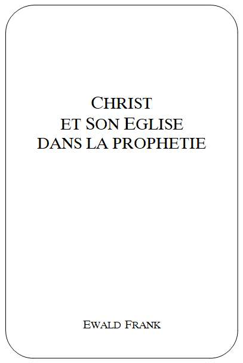

|
 |
Titre
original de louvrage: Auteur: Traduit de langlais. Tout droit de reproduction,même partiel, est réservé. Editeur |
|
|
TABLE DES MATIERES |
| Introduction | |
| Le Fils de lhomme | |
| Voici, lEpoux vient | |
INTRODUCTION
Le but de cet exposé est de centrer notre attention sur Christ et Son Eglise dans la prophétie. Dès le commencement des temps, des hommes de Dieu ont consigné les actes sacrés accomplis par le Tout-Puissant. Ils ont rendu témoignage de ce quils avaient vu, entendu et expérimenté. De tels témoignages se trouvent aussi bien dans lAncien Testament que dans le Nouveau.
Nous vivons toujours dans les temps bibliques, et nous avons encore accès aux choses que le Seigneur fait aujourdhui. Dieu nest pas mort, comme certains le prétendent.
Jai pu exercer mon ministère dans environ cinquante pays différents autour du monde, et jai été invité à parler dans diverses églises, telles que des églises Anglicanes, Luthériennes, Méthodistes, Baptistes, Pentecôtistes, et dautres assemblées encore. Le fidèle serviteur de Dieu ne tient pas compte des barrières dressées par les hommes. Il sait que les enfants de Dieu se trouvent partout. Lorsque le plan du salut fut développé devant ces serviteurs de Dieu et devant leurs congrégations, et que la Parole fut exposée à la lumière de laccomplissement de prophéties de la Bible, ils furent confondus.
Ceux des serviteurs de Dieu de différentes dénominations qui sont au courant de ce qui se passe dans le monde, reconnaissent et admettent que William Branham a été employé par Dieu dans cette génération dune manière qui na pas été surpassée. Cependant, certains essaient de minimiser son ministère dans lintention de détruire linfluence que Dieu lui a accordée parmi le peuple. Bien quils mettent les gens en garde contre son enseignement biblique, ils ne peuvent nier quil ait été un puissant prophète. Cela na pas de sens. Leau amère et leau douce ne peuvent pas jaillir de la même source.
Un prophète de premier plan est un voyant. Il a la révélation divine de la Parole, et il est consacré dès sa naissance pour un but déterminé (Jér. 1.5).
Les prédications inspirées de cet humble envoyé de Dieu ont jeté une nouvelle lumière sur la Parole. Vous serez surpris, en les lisant, des informations spirituelles quelles contiennent; elles viennent au temps opportun. Certains trouveront sans doute que ces choses sont difficiles à comprendre mais il en a été de même au temps des apôtres.
Des personnes ignorantes et mal affermies ont fait un mauvais usage de certaines déclarations de ce prophète, et cela pour leur propre ruine. Par conséquent, il est essentiel daligner toute doctrine sur lenseignement des Saintes Ecritures, et de faire de la Bible notre absolu.
Je vous demande de lire cette brochure dans un esprit de prière. Que son contenu puisse vous aider à recevoir une meilleure compréhension du plan entier de salut. Que nous puissions aimer le Seigneur Jésus-Christ plus que jamais auparavant. Ne jugez pas selon ce que les gens disent, ou selon ce quils font. Soyez conscients de la gravité de votre décision. Soyez sûrs quelle est juste! Que Dieu vous bénisse richement.
Lauteur
CHRIST
ET SON EGLISE
DANS LA PROPHETIE
En vérité, cest un temps glorieux dans lhistoire de lhumanité. Dans tous les domaines, de nouvelles découvertes sont faites. Dénormes progrès ont été réalisés, et des choses incroyables se sont accomplies. Plus rien ne semble impossible. Cette génération a été témoin de la transition entre les jours des chars et des chevaux, et lâge spatial. Chacun sefforce de marcher avec son temps. Mais la grande question est celle-ci: Sommes-nous de notre temps dans les choses du Royaume de Dieu? Quen est-il de notre progrès spirituel? Suivons-nous le mouvement du Saint-Esprit, alors que le Seigneur est sur le point de nous prendre dans les lieux les plus élevés?
Vous êtes peut-être un chrétien reconnaissant pour les choses faites par Dieu dans le passé; mais la question vitale est celle-ci: REALISEZ-VOUS CE QUE FAIT MAINTENANT LE SAINT-ESPRIT, ALORS QUIL CONDUIT LEPOUSE DE CHRIST VERS LA PERFECTION?
LEglise de Jésus-Christ fut fondée le jour de Pentecôte, lorsque Dieu Lui-même établit le modèle du véritable christianisme valable pour toute la dispensation de lEglise des nations. Dieu ne reconnaîtra rien dautre que Sa parole. Chaque individu, chaque assemblée, doit comparer sa doctrine, les fondements de sa foi et ses expériences avec les enseignements de la première Eglise. En ce temps-là, chaque croyant a fait une expérience personnelle et surnaturelle avec Christ, et il avait été placé dans lEglise par le Saint-Esprit en tant que fils ou fille de Dieu.
Nous devons malheureusement dire que, malgré ce glorieux commencement de lEglise, les choses charnelles se glissèrent graduellement dans le royaume des rachetés. Les gens commencèrent à devenir froids et formalistes, et ils commencèrent aussi à enseigner leurs propres credo et leurs doctrines légalistes. A mesure que le temps passait, lindifférence sétablit, et la majorité de la chrétienté commença à sécarter du chemin de la Lumière, et à senfoncer dans les ténèbres spirituelles. Cependant, le Seigneur veille sur les Siens. Il envoya un messager à chacun des sept âges de léglise, pour allumer à nouveau le feu Divin. Le petit groupe, la minorité, garda toujours solidement la foi des pères apostoliques. Le glorieux Saint-Esprit Se déplaçait au milieu deux, et les guidait dans la Parole promise pour leur temps.
Pour vous, frères, comme Isaac, vous êtes enfants de la promesse (Gal. 4.28). Les enfants de la promesse reçoivent la Parole de la promesse, et ils sont scellés du Saint-Esprit qui a été promis (Eph. 1.13).
Dans les temps passés, les réveils successifs balayant les nations apportèrent des temps de rafraîchissement de la part du Seigneur par lesquels Il attira lattention de Ses enfants sur le réel accomplissement de la Parole promise. La foi dAbraham, ainsi que celle de toute sa semence, sest toujours reposée sur les promesses faites par Dieu.
Dans Sa miséricorde, Dieu a toujours conduit les Siens, et Il a dirigé leurs pas. Pendant lâge même des ténèbres, ils furent capables dendurer les persécutions les plus brutales et les tortures, parce que Dieu était avec eux. Cest avec un coeur rempli de reconnaissance que nous pouvons considérer les jours de la Réformation, ainsi que les différents réveils qui suivirent, au cours desquels Dieu conduisit les Siens pas à pas dans une lumière grandissante. Toutefois, nous ne pouvons pas nous arrêter à lune de ces visitations du passé, desquelles beaucoup de dénominations sont sorties. LEsprit de Dieu ne reste jamais à lintérieur des frontières étroites dune organisation. Il continue à Se déplacer, et le Saint-Esprit manifeste Sa puissance au milieu de tous les vrais croyants, jusquà ce quils soient modelés à limage bénie du Seigneur Jésus-Christ. Bientôt, Il reviendra pour prendre une Epouse-Parole sans taches ni rides.
Au commencement de ce siècle, une puissante effusion du Saint-Esprit eut lieu; les dons de lEsprit furent redonnés aux enfants de Dieu. Par toute la terre, les gens firent lexpérience dun temps de rafraîchissement spirituel venant dEn-haut. Les personnes âgées de tous les pays peuvent rendre témoignage de la puissante visitation du Dieu Tout-Puissant. Et Il continue encore Son oeuvre parmi les Siens. Beaucoup de personnes sont encore un témoignage vivant du puissant réveil de salut et de guérison qui suivit la seconde guerre mondiale. Dans Sa grande compassion et dans Son amour, le Seigneur continua dentourer Ses enfants par les soins de Son Saint-Esprit, afin dattirer leur attention vers la Parole promise pour notre temps. Selon Sa Parole, Il Se proposait déclairer les détails de Son Plan éternel, et de révéler les glorieux mystères cachés tout au long des âges.
Ce dernier mouvement de lEsprit commença selon lordre direct donné par le Dieu Tout-Puissant à William Branham en mai 1946. Son ministère unique en son genre, être remarquable quant au salut et à la guérison, eut un grand impact sur les masses. Le Seigneur Lui-même confirma lEvangile devant les yeux de centaines et de milliers de personnes tout autour du monde. Cependant, lorsque la vraie doctrine biblique fut enseignée, le plus grand nombre ne voulut pas laccepter. Il devint évident quils recherchaient plutôt les pains et les poissons. Le groupe fidèle de ceux qui suivaient Christ se rétrécit encore davantage, et seule une minorité embrassa son ministère prophétique dans son entier, reconnaissant le jour dans lequel ils vivaient, et le message qui sy rapportait. Ceux-ci étaient prêts à suivre le Seigneur où quIl les conduise.
Depuis les jours des apôtres, la Parole de Dieu na pas été prêchée dans Sa plénitude comme Elle fut prêchée lors de ce dernier réveil de restauration. Jésus-Christ a manifesté Sa puissance, et Il a prouvé Lui-même quIl était le même hier, aujourdhui et pour toujours, dans le sens véritable de la Parole. Ceux dentre nous qui ont le privilège de vivre dans ce dernier âge de lEglise ont vu la lumière, et ont été conduits hors des ténèbres spirituelles. La Parole-Epouse, lElue de Dieu, est retournée à lenseignement scripturaire original sous la conduite du Saint-Esprit.
Nous avons maintenant atteint les tout derniers jours de la restauration complète de lEglise du Dieu Vivant, comme cela a été promis dans Joël 2.25: Jésus-Christ, que le ciel doit recevoir jusquau temps du rétablissement de toutes choses, dont Dieu a parlé anciennement par la bouche de ses saints prophètes. Jésus-Christ reviendra chercher une Epouse complètement rétablie dans Sa Parole.
Toutes les fois que Dieu envoie un réveil spirituel, Son peuple prend garde à lappel divin, et il se sépare de toute incrédulité, de toute indifférence, et de tout formalisme. Il savance comme le Saint-Esprit le conduit.
Jamais auparavant, dans lhistoire, les activités religieuses et lévangélisation nont pu se déployer sur une aussi grande échelle que de nos jours. Jamais nous navons eu les moyens et les possibilités qui nous sont accordées maintenant; mais aussi, il na jamais été aussi difficile de trouver son chemin, car le juste et le faux sont étroitement associés dans ces tout derniers jours. Jésus dit, dans Matthieu 24.24, que vers la fin, les temps seraient si trompeurs que même les élus seraient séduits, si cela était possible. Mais, grâces soient rendues à Dieu, cela nest pas le cas.
Nous entendons souvent parler de Christ et de lEglise, mais où est-Il trouvé tel que la Bible nous Le présente? Où est lEglise telle que lEcriture La décrit? Chaque dénomination chrétienne ne prétend-elle pas être LEglise? Toutes ses activités religieuses ne sont-elles pas imputées au Nom de Jésus-Christ? Chacun proclame être dans le juste, mais le fait de le proclamer nen justifie aucun. Aux yeux de Dieu, il ny a quune seule Eglise fidèle: celle qui est la demeure du Très-Haut: la maison de Dieu, qui est léglise du Dieu Vivant, la colonne et lappui de la vérité (1 Tim. 3.15). Il y a seulement une foi, un Seigneur, un baptême (Eph. 4.5). Tous les membres du Corps de Christ sont joints ensemble, les uns aux autres, et avec Christ (1 Cor. 12.12).
Nous devons tous nous abstenir de présenter une interprétation particulière, mais au contraire laisser la Parole de Dieu parler pour Elle-même. Les trésors cachés ont été découverts et ramenés à la lumière au travers du ministère prophétique manifesté de nos jours. Nous réalisons que la venue du Seigneur Jésus-Christ est très proche, et nous navons pas le temps découter toutes les voix qui se font entendre autour de nous. Nous devons écouter et obéir à lappel de la voix du Bon Berger, Lequel appelle Ses brebis et leur fait signe de Le suivre. Lhomme ne vivra pas de pain seulement, mais de toute parole qui sort de la bouche de Dieu (Mat. 4.4). Cest-à-dire, pas seulement de certains passages qui conviennent à notre propre conception, mais bien de chaque parole de Dieu.
Laissons la Bible être notre seule autorité et notre seul guide dans toutes les choses scripturaires. Lorsque nous avons à faire à la Parole de la prophétie, nous nous avançons sur un lieu saint. Enlevons simplement nos souliers, tandis que le Seigneur parle.
CHRIST SOUS SES DIFFERENTS ASPECTS
La Parole de Dieu nous fait voir le Seigneur Jésus-Christ dans plusieurs de Ses différents titres et fonctions lorsquIl Se manifeste Lui-même dans le plan de la rédemption. Il est vu comme LAgneau de Dieu qui ôte le péché du monde (Jean 1.29). Il est le Souverain Sacrificateur, qui est entré dans le lieu très saint avec Son propre Sang (Héb. 9.11,12). Il est le Seul médiateur entre Dieu et les hommes (1 Tim. 2.5), lAvocat qui intercède pour nous (1 Jean 2.1). Il est le Lion de la tribu de Juda (Apoc. 5.5), le Roi des rois, le Seigneur des seigneurs (Apoc. 19.16). Il est le tout en tous pour les croyants, Dieu manifesté en chair (1 Tim. 3.16). Il est le Fils de Dieu, le Fils de lhomme, et le Fils de David.
Les quatre Evangiles décrivent la vie de Christ, Son ministère, Ses souffrances, Sa mort, Son ensevelissement, Sa glorieuse résurrection et Son ascension bénie. Il acquit les Siens sur le Calvaire en répandant Son Saint Sang. Le jour de Pentecôte, Il revint sous la forme du Saint-Esprit et établit Sa demeure en ceux quIl avait rachetés. Depuis lors, Il agit au travers deux, accomplissant les mêmes actes quIl fit durant Son ministère terrestre. Il rend témoignage à la prédication de Sa Parole en La confirmant par les signes qui La suivent (Héb. 2.4).
LEglise primitive persévérait dans la doctrine des apôtres, dans la communion fraternelle et dans les prières (Actes 2.42). Pouvons-nous en dire de même? Les croyants avaient compris que les apôtres étaient inspirés par le Saint-Esprit pour écrire et parler sous Sa direction. Peut-on dire quil en soit de même de nous, en tant quindividus, ainsi que de léglise à laquelle nous appartenons?
Les épîtres nous décrivent le fonctionnement et lordre dans lEglise. En accord avec Ephésiens 4.11 et 1 Corinthiens 12.28, Dieu a placé dans Son Eglise des apôtres, des prophètes, des docteurs, des évangélistes et des pasteurs. Ces ministères ont été ordonnés par Dieu pour exhorter et perfectionner le Corps de Christ. Il a aussi placé les dons spirituels pour lédification et laffermissement de lEglise (1 Cor. 12.4-11). Chaque membre fidèle du Corps de Christ porte les fruits du Saint-Esprit (Gal. 5.22-26). Je désire que lon comprenne clairement que toute la Parole de Dieu est encore valable.
La Parole de Dieu nous donne des informations claires et précises sur tous les ministères, sur la doctrine et sur les ordonnances dans lEglise. Aucune de ces choses ne devrait être mal comprise. Quiconque désire faire ce qui est juste est capable de suivre le vrai modèle de la Bible. On ne peut parvenir à la perfection que par lobéissance à tout lenseignement fondamental de la Bible. Cest pourquoi, laissant les éléments de la parole de Christ, tendons à ce qui est parfait, (Héb. 6.1).
Laspect prophétique de Christ et de Son Eglise est très important, surtout dans un temps comme celui-ci, alors que les prophéties de la Bible sont en train de saccomplir. Certainement, nous pourrions parler de létat chaotique du monde actuel, des signes du temps de la fin, de ce qui concerne Israël, et de beaucoup dautres sujets. Nous sommes très reconnaissants à notre Dieu Tout-Puissant parce quIl garde Ses promesses faites à légard des Juifs, comme Il le fait à légard de Son Eglise. Tout croyant véritable regarde favorablement Israël, sans se soucier des rapports, et du point de vue pris par le pays dans lequel il vit. La nation dIsraël, ainsi que sa survie, sont en elles-mêmes des miracles. Nations, écoutez la parole de lEternel, et publiez-la dans les îles lointaines! Dites: Celui qui a dispersé Israël le rassemblera, et il le gardera comme le berger garde son troupeau (Jér. 31.10).
Il est certain que Dieu noubliera jamais Israël et quIl gardera toutes les bonnes promesses faites à la semence naturelle dAbraham, jusquà ce que Ses desseins à son égard soient accomplis. Dans cette génération, deux choses se déroulent parallèlement: le rassemblement dIsraël dentre toutes les nations, et lappel fait à lEpouse de Christ de sortir de toutes les organisations. Dans laccomplissement des prophéties, toutes choses arrivent maintenant à leur apogée. La victoire finale arrivera bientôt, et le Très-Haut sera glorifié. Il est particulièrement émouvant de reconnaître la manière dont lEpouse est en train dêtre préparée avant que lenlèvement ait lieu. Après cela, lEsprit du Seigneur quittera les nations, et le Seigneur Se révélera Lui-même à Ses frères, les Juifs (Zach. 13).
Pour avoir une vue densemble de Christ et de Son Eglise dans la prophétie, nous devons ouvrir le livre de la prophétie, lApocalypse, qui est la Révélation de Jésus-Christ. Les chrétiens fidèles gardent toujours leur équilibre dans les Ecritures, et ils savent reconnaître chaque Parole dans son vrai contexte.
Les quatre Evangiles dépeignent principalement la vie de Christ, depuis Sa naissance jusquà Son ascension. Les épîtres contiennent toute la doctrine et les ordonnances de lEglise du Nouveau Testament. De même, le livre de la prophétie nous présente Jésus-Christ comme le Fils de lhomme marchant au milieu des sept chandeliers dor. Le Seigneur a trouvé bon douvrir la Parole de la Prophétie dans notre temps.
Jean eut le privilège davoir une vue préliminaire de toutes les choses qui devaient être manifestées jusquà ce que le temps se fonde dans lEternité. Nous devons mettre toutes choses à leur juste place, et les considérer dans leur perspective correcte à la lumière de la Sainte Parole de Dieu, alors que nous en observons laccomplissement.
Le livre de la prophétie souvre avec une bénédiction toute spéciale: Heureux celui qui lit et ceux qui entendent les paroles de la prophétie, et qui gardent les choses qui y sont écrites! Car le temps est proche. Elle se termine par une très sérieuse exhortation, laquelle a besoin dêtre considérée avec un très grand soin. Je le déclare à quiconque entend les paroles de la prophétie de ce livre: Si quelquun y ajoute quelque chose, Dieu le frappera des fléaux décrits dans ce livre; et si quelquun retranche quelque chose des paroles du livre de cette prophétie, Dieu retranchera sa part de larbre de la vie et de la ville sainte, décrits dans ce livre (Apoc. 22.18,19). Ces paroles nous annoncent une séparation complète davec le Seigneur, et de la Vie Eternelle.
Tout au long des âges de lEglise, lorsque les gens lisaient ce dernier livre de la Bible, ils navaient pas la possibilité de comprendre ces choses, parce que les mystères prophétiques demeuraient cachés, jusquà ce que le temps de leur accomplissement arrivât. Nous devons malheureusement dire que les serviteurs de Dieu et autres ont donné leur interprétation particulière aux choses contenues dans les Evangiles, les épîtres et les écrits prophétiques, au lieu de se limiter à ce qui avait été révélé par le Saint-Esprit.
De même que, lors de la première venue de Christ, les théologiens donnèrent leur propre point de vue, au lieu dattendre et dobserver laccomplissement même des prophéties bibliques, ainsi en est-il de nouveau, aujourdhui. Les églises et les serviteurs de Dieu sont tellement bien installés dans leur propre doctrine et leurs propres voies, quil ny a plus de place pour la révélation spirituelle. Les explications et les interprétations des sujets prophétiques de la Sainte Parole de Dieu ont causé beaucoup de confusion parmi les croyants. Les prophéties bibliques ont été écrites pour nous faire connaître avant le temps de leur accomplissement ce que Dieu Se proposait de faire. Cela ne laisse aucune place à la spéculation; lévénement doit être reconnu quand il saccomplit.
Prenons garde à lavertissement que Pierre nous a donné sous linspiration du Saint-Esprit: sachant tout dabord vous-mêmes quaucune prophétie de lEcriture ne peut être un objet dinterprétation particulière, (2 Pier. 1.20).
LA VISION DE PATMOS
Alors que Jean se trouvait dans lîle de Patmos, il fut ravi en esprit, et le Seigneur lui fit voir en symboles la partie prophétique du plan du salut. Il vit les âges de lEglise, ainsi que tout ce qui devait arriver jusquà la fin des temps. Il vit même les nouveaux cieux et la nouvelle terre.
Lui-même rend témoignage, en disant: Je fus ravi en esprit au jour du Seigneur . Quelques-uns supposent que le jour du Seigneur est le jour du sabbat, alors que dautres proclament que cest le dimanche. Mais ces deux interprétations sont charnelles. Il ne peut être question ici dun jour de 24 heures, car Jean fut exilé dans lîle de Patmos pour une durée de deux ans.
La Bible décrit clairement ce quest le jour du Seigneur. Cest la période qui commence après que le jour de grâce et de salut est terminé. Il commence par le jugement qui tombe sur toutes les nations rassemblées contre Jérusalem: Cest une multitude, une multitude dans la vallée du jugement; car le jour de lEternel est proche, dans la vallée du jugement. Le soleil et la lune sobscurcissent, et les étoiles retirent leur éclat. De Sion, lEternel rugit, de Jérusalem, il fait entendre sa voix; les cieux et la terre sont ébranlés. Mais lEternel est un refuge pour son peuple, un abri pour les enfants dIsraël (Joël 3.14-16).
Les trois premiers chapitres de lApocalypse parlent des choses qui sappliquent à lEglise du Nouveau Testament. Cette période est connue comme étant le jour du salut. (2 Cor. 6.2). De même que le jour du salut a commencé par une glorieuse démonstration de la puissance de Dieu pour sauver, et se terminera pareillement, ainsi le jour du Seigneur commencera, et se terminera, par une glorieuse démonstration de la puissance de Dieu en victoire sur Ses ennemis.
Le temps de grâce abonde jusquà ce que lEpouse de Jésus-Christ atteigne la perfection, et quElle soit enlevée dans la gloire. Dieu a créé le monde en six jours, et Il Sest reposé le septième jour (Ex. 31.17). Bientôt, les six mille ans seront accomplis, et alors le septième jour, le jour du Seigneur commencera. Mais il est une chose, bien-aimés, que vous ne devez pas ignorer, cest que, devant le Seigneur, un jour est comme mille ans, et mille ans sont comme un jour (2 Pier. 3.8).
Certaines personnes croient fanatiquement que celui qui adore Dieu le dimanche a la marque de la Bête. Chacun doit prendre extrêmement garde à ne pas mal interpréter les Saintes Ecritures, et affirmer une chose aussi fatale et désastreuse. Quelques-uns voudraient-ils prétendre que Christ avait la marque de la Bête parce quIl Se retrouvait avec Ses disciples le premier jour de la semaine? Le soir de ce jour, qui était le premier de la semaine, les portes du lieu où se trouvaient les disciples étant fermées, à cause de la crainte quils avaient des Juifs; Jésus vint, se présenta au milieu deux, et leur dit: La paix soit avec vous! (Jean 20.19). Il réapparut une semaine plus tard, alors que Ses disciples étaient à nouveau rassemblés (v. 26). Comment quelquun peut-il prétendre que les premiers chrétiens avaient la marque de la Bête parce quils adoraient le dimanche? Le premier jour de la semaine, nous étions réunis pour rompre le pain. Paul, qui devait partir le lendemain, sentretenait avec les disciples, et il prolongea son discours jusquà minuit (Actes 20.7). En ce qui concerne la collecte faite en faveur des saints, Paul avait même recommandé de la mettre à part le premier jour après le sabbat. Que chacun de vous, le premier jour de la semaine, mette à part chez lui ce quil pourra, selon sa prospérité, afin quon nattende pas à mon arrivée pour recueillir les dons (1 Cor. 16.1,2).
Les Juifs devaient commémorer le sabbat. Les enfants dIsraël (non pas les nations) observeront le sabbat, en le célébrant, eux et leurs descendants, comme une alliance perpétuelle. Ce sera entre moi et les enfants dIsraël (pas les nations) un signe qui devra durer à perpétuité (Ex. 31.16,17).
Toutes les fois que le Seigneur Jésus, ou les apôtres, prêchaient aux Juifs, ils le faisaient le sabbat, parce que cétait le jour où les Juifs se rassemblaient pour adorer. Par contre, les chrétiens honoraient le jour de la résurrection, mais ils ne furent jamais astreints à observer un certain jour, comme il en était pour les Juifs. Tout véritable disciple de Jésus-Christ a trouvé la paix avec Dieu, et cest ainsi quil est entré dans le véritable repos de sabbat. Celui-ci ne se limite pas à un certain jour de la semaine, mais cest un repos éternel.
Lhistoire nous rapporte que lautorité papale édicta un décret déclarant que le dimanche devait être le seul jour dadoration pour les Juifs comme pour les chrétiens. Cest de leur propre volonté que les chrétiens sétaient rassemblés ce jour-là, depuis le temps des apôtres. Quelles terribles répercussions cet édit eut-il pour les Juifs, nul ne peut se limaginer. Léglise Catholique Romaine les accusa dêtre coupables de la mort de Christ, et cest pourquoi elle édicta contre eux cette proclamation impérative. Le résultat en fut quils souffrirent la persécution; ils furent menacés, torturés et mis à mort. Un jour, le Dieu du Ciel, qui est juste, vengera ces actes de cruauté.
Dieu a Sa propre manière dagir à légard des Juifs, et Il a aussi Sa manière de faire avec les nations. Le sabbat avait été donné aux Juifs comme un signe de Son alliance avec eux, tandis que lEglise des nations célébrait la résurrection du Seigneur Jésus-Christ. Dieu na jamais eu lintention de faire observer aux Juifs le dimanche, comme Il na pas davantage lintention de faire observer le sabbat aux nations.
Certaines personnes croient même que lobservation du sabbat est le Sceau de Dieu. Cette croyance na pas de fondement scripturaire. La Bible explique très clairement ce quest le Sceau de Dieu, le Sceau du Saint-Esprit. Ceux qui ont écouté les prédications de frère Branham sont parvenus à une compréhension claire de ce quest le Sceau de Dieu, ainsi que de ce quest la marque de la Bête.
Dans lAncien Testament, la moisson de lEglise du Nouveau Testament était représentée par loffrande de la gerbe agitée devant le Seigneur le matin du jour suivant le sabbat (Lév. 23.10,11). Le jour de Pentecôte, qui est le cinquantième jour, tombait également sur le jour suivant le sabbat (Lév. 23.15,16). Pendant le Millénium, le jour dadoration sera à nouveau le sabbat (Es. 66.23).
Les discussions et les disputes relatives au manger et au boire, ainsi que celles relatives à lobservation dun certain jour, ne servent à lédification de personne. Que personne donc ne vous juge au sujet du manger et du boire, ou au sujet dune fête, dune nouvelle lune, ou des sabbats: cétait lombre des choses à venir (Col. 2.16,17).
Jean fut ravi en esprit dans un but plus grand que de commémorer un jour de vingt-quatre heures. Il vit le développement des temps, et les choses importantes qui devaient arriver. Le même glorieux Saint-Esprit, qui avait montré ces choses à Jean, les a révélées maintenant au travers du ministère prophétique.
POUR MONTRER A SES SERVITEURS
Le Dieu Tout-Puissant na jamais manqué de donner des directives claires à Son peuple; Il la fait en envoyant Ses messagers, les serviteurs et prophètes, avec une parole spéciale pour le temps dans lequel ils vivaient. En période dabondance, si le peuple de Dieu oubliait le Seigneur et ne marchait pas dans Ses sentiers, Dieu lui envoyait un message pour lavertir avant que le jugement ne latteignît. LEternel envoya parmi eux des prophètes pour les ramener à lui, mais ils nécoutèrent point les avertissements quils en reçurent Ainsi parle Dieu: Pourquoi transgressez-vous les commandements de lEternel? Vous ne prospérerez point; car vous avez abandonné lEternel, et il vous abandonnera (2 Chr. 24.19,20). De nouveau, les jugements de Dieu sont suspendus sur nos têtes. Quel est donc maintenant le message, avant quils ne nous atteignent.
Jaimerais attirer votre attention sur le livre de la prophétie, la révélation de Jésus-Christ, dans lequel le Seigneur promet de montrer à ses serviteurs les choses qui doivent arriver bientôt. Ces messages prophétiques étaient envoyés pour corriger le peuple, et pour le ramener à Dieu. Le succès ou léchec de votre vie spirituelle dépend de la façon dont vous évaluez et estimez la Parole du Seigneur. Le Saint-Esprit en vous vous fera toujours dire Oui et Amen! à la Parole de la promesse.
Le mot serviteurs est au pluriel et désigne premièrement les sept messagers qui se trouvent dans la main droite du Seigneur, et qui sont ceux qui reçoivent par le Saint-Esprit la révélation prophétique de la Parole, pendant les sept âges de lEglise.
Le fait même que le Seigneur envoie Son ange à Jean montre limportance du contenu du dernier livre de la Bible. et quil a fait connaître, par lenvoi de son ange, à son serviteur Jean (Apoc. 1.1). Dieu a Ses anges dans le ciel, et Il a sur la terre Ses messagers pour annoncer les choses qui doivent arriver.
Tous les membres du Corps de Christ ne peuvent pas être de tels serviteurs de Dieu auxquels vient la Parole du Seigneur, et dont le ministère a la qualité de voix de Dieu, mais tous doivent entendre la voix de Sa Parole. Cest selon Son propre choix que Dieu prend quelquun pour quil rende témoignage de ce quil a vu et entendu. Il est dit de Jean: lequel a attesté la Parole de Dieu et le témoignage de Jésus-Christ, tout ce quil a vu (Apoc. 1.2). De même que les serviteurs et prophètes dautrefois, ainsi eut-il des visions et reçut-il par révélation la Parole de Dieu. Il y a une grande différence entre ces deux points: avoir une connaissance de la Parole accumulée, et avoir la révélation de Jésus-Christ, laquelle ne peut être reçue que par le Saint-Esprit. Alors seulement, la Parole deviendra pour nous Esprit et Vie.
Il y a une grande différence entre quelquun qui parle de Christ, et Christ qui parle au travers dun prophète, lequel a le AINSI DIT LE SEIGNEUR!. Le grand apôtre Paul dit ceci: Car je ne lai ni reçu ni appris dun homme, mais par la révélation de Jésus-Christ (Gal. 1.12).
LA VOIX SEMBLABLE A UNE TROMPETTE
Toutes les fois que surgissait une occasion spéciale, que quelque chose dextraordinaire allait arriver, on sonnait de la trompette pour appeler le peuple à se rassembler, que ce soit pour une fête ou une annonce. Lorsque le Seigneur Dieu descendit sur le mont Sinaï pour sy rencontrer avec Son prophète Moïse quIl avait destiné à recevoir Sa Parole pour le peuple dIsraël, il est écrit: La montagne de Sinaï était toute en fumée, parce que lEternel y était descendu au milieu du feu, cette fumée sélevait comme la fumée dune fournaise, et toute la montagne tremblait avec violence. Le son de la trompette retentissait de plus en plus fortement. Moïse parlait, et Dieu lui répondait à haute voix (Ex. 19.18,19).
La trompette retentit au temps de Josué, lorsque les sept sacrificateurs prirent les sept trompettes, et marchèrent devant larche de lalliance dans laquelle était gardée la Parole du Seigneur (Jos. 6).
La trompette de Dieu retentit lorsquIl est prêt à parler. Le son de ces trompettes est là pour alerter le peuple de Dieu, afin quil écoute Sa voix pour recevoir Sa Parole, et faire ainsi lexpérience de la victoire.
Dans notre génération, une telle sonnerie de trompette sest fait entendre de nouveau. Les Ecritures nous disent quaux jours de la voix du septième ange, quand il sonnerait de la trompette, le mystère de Dieu saccomplirait, comme il la annoncé à Ses serviteurs les prophètes (Apoc. 10.7).
Quel est le mystère de Dieu? Comment pouvons-nous entendre le son de la voix du septième ange? Nous avons déjà vu quun ange est un messager, lequel a un message de Dieu pour le peuple. Lors du retentissement de la voix du septième ange, le mystère de Dieu saccomplirait, comme cela avait été révélé à Ses serviteurs, les prophètes.
Gardons bien dans notre pensée que le mot prophète a une double signification. Dans lEglise du Nouveau Testament il y avait des apôtres, des prophètes, des docteurs, etc., mais lorsque quelque chose de marquant allait arriver dans le monde, Dieu envoyait un prophète principal pour lannoncer.
Il y avait dans léglise dAntioche plusieurs prophètes et docteurs (Actes 13.1). En ce temps-là, des prophètes descendirent de Jérusalem à Antioche. Lun deux, nommé Agabus, se leva, et annonça par lEsprit quil y aurait une grande famine sur toute la terre. Elle arriva, en effet, sous Claude (Actes 11.27,28).
Un tel prophète peut annoncer à lavance des événements se rapportant aux circonstances extérieures, ou de nature personnelle. Agabus prophétisa aussi au sujet de Paul et il prédit ce qui lui arriverait (Actes 21.11). Selon 1 Corinthiens 14.29, deux ou trois prophètes devaient parler, et les autres juger.
Lorsquun prophète principal sélève, un voyant, il est un porte-parole du Dieu Tout-Puissant. Il exprime la Parole par révélation divine, et fait ressortir les prédictions de la partie prophétique du plan du salut. Nous devons écouter et croire un tel prophète, et non le juger. Il y eut un seul Hénoc, un seul Abraham, un seul Moïse, un seul Noé, un seul Elie, un seul Jean-Baptiste et un seul Paul, chacun en son temps. Personne navait à juger ces prophètes, car ils avaient le AINSI DIT LE SEIGNEUR.
Dans lEglise du premier âge, il y avait des apôtres, des prophètes, des docteurs, etc., mais cest à Paul, le prophète-messager, quavait été accordé le soin dexposer les choses à lEglise. Il dit, dans 1 Corinthiens 14.37: Si quelquun croit être prophète ou inspiré, quil reconnaisse que ce que je vous écris est un commandement du Seigneur. Chacun de ceux qui ont été appelés véritablement par Dieu à lun des cinq ministères dEphésiens 4.11, acceptera la véritable Parole du Seigneur qui vient par le messager envoyé de Dieu.
Dans chacun des sept âges de lEglise, il y eut de grands hommes aux yeux du peuple; ils furent sans lombre dun doute employés par Dieu dans différents ministères, mais le choix de Dieu intervint dans chaque âge pour faire paraître le message de lheure. Pareillement dans notre génération, nous trouvons beaucoup dévangélistes renommés et éloquents, mais qui est donc le messager auquel la Parole du Seigneur vient aujourdhui?
LE FILS DE LHOMME
Jésus-Christ est le Fils de Dieu, le Fils de lhomme, et le Fils de David. Chacun de ces titres Le décrit dans lune de Ses différentes fonctions, et lun ne peut être mis à la place de lautre. En rapport avec la Parole prophétique, Il est présenté comme le Fils de lhomme. Cest la raison pour laquelle nous ne le voyons pas comme le Fils de Dieu, ou comme le Fils de David, mais bien comme le Fils de lhomme marchant au milieu des sept chandeliers dor (Apoc. 1.13).
Cest parce que les prophéties de la Bible se sont accomplies lors de Sa première venue que les écrivains des quatre Evangiles parlent de Lui presque exclusivement comme étant le Fils de lhomme. Pendant Son ministère terrestre, le Seigneur Jésus Se présente Lui-même comme le Fils de lhomme. Il était laccomplissement de Deutéronome 18, auquel Pierre se référa plus tard: Moïse a dit: Le Seigneur votre Dieu vous suscitera dentre vos frères un prophète comme moi; vous lécouterez dans tout ce quil vous dira, et quiconque nécoutera pas ce prophète sera exterminé du milieu du peuple (Actes 3.22,23).
Moïse et Elie, de lAncien Testament, Pierre, Jacques et Jean, du Nouveau, eurent le privilège de voir le Seigneur Jésus-Christ transfiguré devant eux: son visage resplendit comme le soleil, et ses vêtements devinrent blancs comme la lumière Comme il parlait encore, une nuée lumineuse les couvrit. Et voici, une voix fit entendre de la nuée ces paroles: Celui-ci est mon Fils bien-aimé, en qui jai mis toute mon affection: ECOUTEZ-LE! Lorsquils entendirent cette voix, les disciples tombèrent sur leur face, et ils furent saisis dune grande frayeur (Mat. 17).
Jean rend aussi témoignage de la réaction quil eut lorsquil Le vit: Quand je le vis, je tombai à ses pieds comme mort. Il posa sur moi sa main droite, en disant: Ne crains point! Je suis le premier et le dernier, et le vivant (Apoc. 1.17,18).
Si nous Lavons accepté comme le Fils de Dieu, et comme notre Sauveur, ne devrions-nous pas tomber à Ses pieds, et Le considérer, lorsquIl prononce Sa Parole avec lautorité du Fils de lhomme, le Prophète-Dieu?
Dans Apocalypse deux et trois, Jésus-Christ envoie Ses anges-messagers aux sept âges de lEglise. En conclusion de chacun de ces messages, nous lisons les mêmes paroles: Que celui qui a des oreilles entende ce que lEsprit dit aux Eglises!. QUICONQUE NECOUTERA PAS CE PROPHETE SERA EXTERMINE Dieu, dans Sa Parole, pense ce quIl dit, et notre destinée éternelle en dépend. Si notre âme a été engendrée à la vie, elle peut encore la perdre si nous négligeons de prendre part à la nourriture spirituelle, qui est la Parole révélée par laquelle nous vivons spirituellement. je neffacerai point son nom du livre de vie (Apoc. 3.5). Soyons bien conscients du poids dune telle déclaration! Ce ne sont pas les paroles dun serviteur de Dieu ou de quelque autre homme, mais bien celles de Jésus-Christ Lui-même, le Fils de lhomme, le Prophète-Dieu, prononçant Sa Parole qui est Esprit et Vie. Toute âme qui nécoute pas les paroles de ce prophète est en grand danger.
Chaque fois que lun des messagers-étoiles entra en scène, il ne chercha pas à favoriser sa propre cause. Aucun deux ne parla dans son propre intérêt. Non, ils étaient les étoiles dans la main droite du Seigneur, réfléchissant la lumière même de Jésus-Christ. Ils étaient les véritables porte-voix du Dieu Tout-Puissant.
Cette parole ECOUTEZ-LE! a plus de signification quil nous est possible de le comprendre. Entre toutes les différentes voix religieuses du monde daujourdhui, celle-ci est véritablement la voix de Dieu. Les jours sont venus où nous devons écouter la voix qui retentit comme le son dune trompette. Si nous sommes la véritable semence de Dieu, nous devons recevoir la Parole parlée originale.
Pierre, qui était présent sur la montagne de la Transfiguration, a été inspiré par le Saint-Esprit pour rapporter la déclaration divine: vous lécouterez dans tout ce quil vous dira (Actes 3.22).
Il y a un seul Fils de lhomme, un seul Prophète. Ses messagers sont appelés serviteurs et prophètes. Il est le Souverain Sacrificateur, le Roi, et nous sommes rois et sacrificateurs. Il est le Fils de Dieu, et nous sommes fils et filles de Dieu.
Le fait que Jésus-Christ apparaît comme le Fils de lhomme dans la prophétie nous indique que Son ministère prophétique se poursuit au travers de toute la période du Nouveau Testament.
Les épîtres, commençant avec les Romains et se terminant avec Jude, Le décrivent comme le Fils de Dieu. Pas une seule fois, le terme de Fils de lhomme ou de Fils de David ne se trouvent employés. Ce nest pas une coïncidence, car elles ne traitent pas de la prophétie. Leur but principal était détablir la doctrine et les ordonnances dans lEglise du Nouveau Testament, et de présenter Jésus-Christ comme le Fils de Dieu, Lequel manifeste Sa puissance salvatrice et guérissante depuis le jour de Pentecôte.
Pour les Juifs, Jésus-Christ est le Fils de David. LorsquIl entra dans Jérusalem, le jour des Rameaux, la multitude chanta à haute voix: Hosanna au Fils de David! Béni soit celui qui vient au nom du Seigneur! Hosanna dans les lieux très hauts!. Les enfants dans le temple criaient aussi avec joie: Hosanna au Fils de David! (Mat. 21.9,15).
Comme Fils de David, Il Sassiéra sur Son trône, gouvernant en Roi toutes les nations pendant le Millénium. Comme Fils de Dieu, Il est le Sauveur; comme Fils de lhomme, Il est le prophète, et comme Fils de David, Il est le Roi. Jamais ces trois titres ne peuvent être interchangés. Chaque titre: Fils de Dieu, Fils de lhomme, Fils de David, parle dune manifestation bien définie de Ses attributs et de Ses fonctions. Aucune Ecriture ne peut être changée, et un titre ne peut pas davantage être interchangé avec un autre, bien quon parle de la même Personne. Chaque nom, chaque titre qui Lui est attribué, a une signification spécifique en relation avec le sujet traité, et il doit être laissé dans son propre contexte.
Beaucoup de choses ont été dites au sujet de Jésus-Christ, le Fils de Dieu, mais seul, un petit nombre de personnes semblent se soucier dapprofondir la Parole prophétique, et de reconnaître Jésus-Christ comme le Fils de lhomme. Nous vivons maintenant dans un âge prophétique dans lequel Christ Sest manifesté comme le Fils de lhomme, en accord avec les promesses de la Parole concernant notre temps. A la fin même de la dispensation de la grâce, la révélation du Fils de lhomme, le signe du Fils de lhomme, et finalement la venue du Fils de lhomme doivent saccomplir.
Dans Matthieu 24, le Seigneur Jésus parle des choses qui devaient arriver avant Sa seconde venue. On a beaucoup parlé de tous les signes du temps de la fin: guerres et bruits de guerres, tremblements de terre, rassemblement des Juifs, etc. Dans Matthieu 24.3, la Bible nous dit que les disciples posèrent au Seigneur Jésus trois questions distinctes: Dis-nous, Quand cela arrivera-t-il? Quel sera le signe de ton avènement? et de la fin du monde?. Le Seigneur venait de leur dire quil ne resterait pas pierre sur pierre de ce temple. La réponse à la première question saccomplit peu après, lorsque Titus marcha sur Jérusalem, et la conquit. La ville fut démolie, le temple détruit, et les Juifs furent dispersés.
Cest la seconde question qui nous concerne le plus: et quel sera le signe de ton avènement? Les disciples ne questionnaient pas au sujet des nombreux signes dont Jésus avait parlé, et qui devaient précéder Son retour. Leur question était au singulier: et quel sera le signe de ton avènement?
Notez cela, je vous prie! Il est parlé du Signe de Sa venue. Par conséquent, il doit être en relation avec Sa venue. Un signe est donné pour instruire et pour diriger. Si nous voulons être prêts pour Sa venue, nous devons déchiffrer le signe qui indique Sa venue. Les Juifs verront le signe du Fils de lhomme (Mat. 24.30), avant quIl ne descende sur le Mont des Oliviers (Zach. 14).
La Parole de Dieu déclare que, lorsquIl fut élevé dentre Ses disciples, une nuée Le déroba à leurs yeux (Actes 1.9), et quIl reviendrait de la même manière (Actes 1.11). Cette nuée surnaturelle nous rappelle les diverses visitations du Dieu Tout-Puissant dans lAncien Testament, ainsi que lexpérience que firent les apôtres sur la Montagne de la Transfiguration.
Quelle est donc la signification de lapparition du Seigneur à frère Branham, dans une nuée, le 28 février 1963, avant que les mystères contenus dans les sept Sceaux ne fussent révélés? Se pourrait-il que ce fût le signe de Sa venue destiné à alerter les Siens? Maintenant, cest le temps où nous sommes appelés à sortir à Sa rencontre, et à nous préparer, car la venue du Seigneur est proche. Quiconque proclame que Christ est revenu, ou quIl reviendra dune autre manière que lEcriture ne le déclare, a été aveuglé en ce qui concerne la Vérité, et il sillusionne lui-même.
Un signe est un signal qui exprime, ou porte une signification qui sert à notre information, ou nous donne des directives. Un signe scripturaire est toujours suivi par une voix scripturaire. Ceux qui reconnaissent le signe écoutent alors la voix.
Après que le signe du Fils de lhomme soit apparu dans une nuée surnaturelle, la voix du Seigneur sest fait entendre. Les Sceaux furent ouverts, et les mystères cachés furent révélés. Ainsi, avant que lEpouse de Christ ne soit enlevée dans la gloire, un dernier signe lui a été donné sur terre par le moyen du ministère prophétique. Les faits ne peuvent être niés. Lattention des élus, dans cette dernière génération, est attirée par les choses faites par le Seigneur.
Dans Luc 17, Jésus-Christ Se réfère aux jours de Noé et au temps de Lot; Il dit: Il en sera de même le jour où le Fils de lhomme paraîtra. A ces deux occasions, la Parole du Seigneur fut révélée à un prophète. Avant que le déluge vînt, Noé fut informé de ce qui allait arriver. Avant que les villes de Sodome et de Gomorrhe fussent détruites, le Seigneur parla à Abraham. Ces deux hommes étaient des prophètes de première importance. Abraham reçut alors la confirmation de la promesse faite par Dieu davoir un fils, nommé Isaac, et le Seigneur révéla le secret du coeur de Sara.
Le même ministère de discernement se répéta, lorsque le Seigneur révéla les secrets qui étaient dans le coeur de Nathanaël, de Pierre, de la femme au puits, et dautres encore. Dans notre génération, exactement le même ministère est manifesté. Tous ceux qui sont au courant du ministère prophétique de frère Branham savent quelle sainte atmosphère régnait dans la salle, lorsque le don de discernement était à loeuvre. Dans le monde entier, il disait aux gens quelles étaient leurs maladies, et leurs problèmes, doù ils venaient, etc. Un silence sacré descendait sur lauditoire, car la présence du Seigneur était véritablement là.
Luc 17.30 parle du jour où le Fils de lhomme sera manifesté. Au verset 34, nous est décrit comment seront enlevés ceux qui sont prêts à Le rencontrer: Je vous le dis, en cette nuit-là, de deux personnes qui seront dans un même lit, lune sera prise et lautre laissée; de deux femmes qui moudront ensemble, lune sera prise, et lautre laissée. Ce passage des Ecritures parle sans aucun doute de lenlèvement. Comprenons-le bien! Lenlèvement de lEpouse ne peut avoir lieu avant le signe et la révélation du Fils de lhomme.
Dans Luc 18.8, Jésus-Christ demande: Mais, quand le Fils de lhomme (non pas le Fils de Dieu ou le Fils de David) viendra, trouvera-t-il la foi sur la terre?. Si nous ne reconnaissons pas le signe de Sa venue, et que nous nentendions pas la voix du Fils de lhomme au travers de la Parole prophétique, comment pourrons-nous être prêts pour le jour où Il viendra réellement? LEglise du Dieu Vivant doit renoncer à toutes les traditions introduites par les hommes, réaliser laccomplissement même des prophéties bibliques, et voir Jésus-Christ, le Fils de lhomme, dans Son Eglise. Il tient les sept étoiles dans Sa main droite, Savançant et parlant au milieu des sept chandeliers dor.
Nimporte quel chrétien accueille le Seigneur Jésus-Christ comme le Fils de Dieu, mais seuls les élus Le suivent dans Son ministère prophétique du Fils de lhomme. Aucun des autres ne Le comprend. Comme il en fut lors de Sa première venue, ainsi en est-il maintenant. Elle est venue chez les siens, et les siens ne lont point reçue (Jean 1.11). A la fin du dernier âge de lEglise, celui de Laodicée, Il dit: Voici, je me tiens à la porte, et je frappe. Si quelquun entend ma voix et ouvre la porte, jentrerai chez lui, je souperai avec lui, ET LUI AVEC MOI (Apox. 3.20).
La condition est de Lentendre frapper, de Lui ouvrir la porte, et de Laccueillir. Alors seulement, Il viendra, et soupera avec nous, car Il rompt encore le pain de Vie, et nos coeurs brûlent, alors quIl parle. Cest aux croyants quIl adresse ce message, non aux pécheurs. Il est hors de lEglise, demandant quon Lui ouvre, et quon Le laisse entrer.
Oh, certainement, les activités religieuses sont nombreuses, et beaucoup de choses sont dites de Lui dans les cantiques et dans les prédications. Mais en réalité, Il est hors de lEglise, rejeté et incompris par la majorité, parce quIl Se révèle Lui-même comme le Fils de lhomme, le Prophète, faisant en sorte quarrive la Parole quIl a promise. Il nous a été dit: Ecoutez-le!. Ecoutez, habitants de la terre, parce que le Seigneur parle: Que celui qui a des oreilles, écoute ce que lEsprit dit aux Eglises.
Ceux qui crucifièrent le Seigneur de gloire étaient les personnes les plus religieuses de la terre, et cest à eux quappartenaient les promesses et lalliance de Dieu. Ils pensaient être très près de Dieu et de Sa Parole.
Jésus-Christ est crucifié maintenant à nouveau, et Il est exposé à lignominie par ceux mêmes qui prétendent croire en Lui et dans lalliance quIl a promise, mais qui Le comprennent mal dans Son ministère de Fils de lhomme. Cependant, le Seigneur a donné cette parole de consolation: Mes brebis entendent ma voix (Jean 10.27).
Israël sortit de lEgypte selon la promesse que Dieu avait faite. Cependant, parce quils nobéirent pas à la voix de Dieu, et ne prirent pas à coeur les choses quIl disait, il ne leur fut pas permis dentrer dans le pays de la promesse. Du ciel, il ta fait entendre sa voix pour tinstruire; et, sur la terre, il ta fait voir son grand feu, et tu as entendu ses paroles du milieu du feu. Sache donc en ce jour, et retiens dans ton coeur que lEternel est Dieu, en haut dans le ciel et en bas sur la terre, et quil ny en a point dautre (Deut. 4.36,39).
Pour nous, les paroles de mise en garde qui nous sont adressées se trouvent dans Hébreux 12.25: Gardez-vous de refuser dentendre celui qui parle; car si ceux-là nont pas échappé qui refusèrent dentendre celui qui publiait des oracles sur la terre, combien moins échapperons-nous, si nous nous détournons de celui qui parle du haut des cieux . Dans ce passage, il nest rien dit au sujet de ceux qui Le refusent comme celui qui sauve et qui guérit, mais bien de ceux qui refusent de Lécouter, Celui qui parle, le Prophète, le Fils de lhomme. Si le Seigneur Dieu parle et que Son peuple nécoute pas Sa voix, cest une chose très grave. Aujourdhui, si vous entendez sa voix, nendurcissez pas vos coeurs, comme lors de la révolte (Héb. 3.15). Nous devons entendre Sa voix aujourdhui, le jour dans lequel nous vivons. Car cest là notre aujourdhui.
LE MYSTERE DE CHRIST ET DE SON EGLISE
Jésus-Christ Sest offert Lui-même pour être, une fois pour toutes, le parfait sacrifice sur la croix du Calvaire, pour les péchés de lhumanité déchue. Le plus grand triomphe de tous les âges a été le Sien, lorsquIl emmena captive la captivité, et brisa toutes les chaînes de la prison, en faveur de ceux quIl avait rachetés. Puis Il monta dans les lieux célestes et revint sous la forme du Saint-Esprit pour demeurer dans les Siens et Se manifester au milieu deux tout au long des âges, Jusquà ce quIl revienne pour Son Epouse immaculée, laquelle est revêtue de la robe de Sa justice.
Quelle belle image de Christ et de Son Eglise dans la prophétie nous est dépeinte dans le livre de lApocalypse. Jean Le vit marchant au milieu des sept chandeliers dor, comme le Fils de lhomme.
Je me retournai pour connaître quelle était la voix qui me parlait. Et, après mêtre retourné, je vis sept chandeliers dor, et, au milieu des sept chandeliers, quelquun qui ressemblait à un fils dhomme, vêtu dune longue robe, et ayant une ceinture dor sur la poitrine. Sa tête et ses cheveux étaient blancs comme de la laine blanche, comme de la neige; ses yeux étaient comme une flamme de feu; ses pieds étaient semblables à de lairain ardent, comme sil eût été embrasé dans une fournaise; et sa voix était comme le bruit de grandes eaux. Il avait dans sa main droite sept étoiles. De sa bouche sortait une épée aiguë, à deux tranchants; et son visage était comme le soleil lorsquil brille dans sa force.
Quand je le vis, je tombai à ses pieds comme mort. Il posa sur moi sa main droite, en disant: Ne crains point! Je suis le premier et le dernier, et le vivant. Jétais mort; et voici, je suis vivant aux siècles des siècles. Je tiens les clefs de la mort et du séjour des morts. Ecris donc les choses que tu as vues, et celles qui sont, et celles qui doivent arriver après elles, le mystère des sept étoiles que tu as vues dans ma main droite, et des sept chandeliers dor. Les sept étoiles sont les anges des sept Eglises, et les sept chandeliers sont les sept Eglises (Apoc. 1.12-20).
Dans cette image prophétique, le Seigneur Jésus-Christ est présenté dans Son glorieux état, marchant et parlant au milieu de Son Eglise. La ceinture dor sur Sa poitrine Le représente comme étant Le Juge. Car cest le moment où le jugement va commencer par la maison de Dieu (1 Pier. 4.17).
Jean ne Le vit pas comme le Fils de Dieu, sauvant les perdus et guérissant les malades; il ne Le vit pas plaçant les différents ministères au milieu de Son Eglise. Il ne parla pas des dons spirituels, des douze apôtres, ou des soixante-dix disciples, mais il vit le Seigneur Jésus-Christ comme le Fils de lhomme, tenant les sept étoiles dans Sa main droite. Sa Parole est vivante et efficace, plus tranchante quune épée quelconque à deux tranchants, pénétrante jusquà partager âme et esprit, jointures et moelles; elle juge les sentiments et les pensées du coeur (Héb. 4.12). Celui qui est de Dieu écoute les paroles de Dieu (Jean 8.47). Celui qui me rejette et qui ne reçoit pas mes paroles a son juge; la parole que jai annoncée, cest elle qui le jugera au dernier jour (Jean 12.48).
Le Seigneur Jésus-Christ Se présente Lui-même aux sept Eglises comme le Tout-suffisant, le premier et le dernier, lAlpha et lOméga, celui qui est, qui était, et qui vient, le Tout-Puissant (Apoc. 1.8). Cest Sa révélation finale à Son Eglise. Il a été décrit dans Ses divers attributs et aspects se rapportant au plan de rédemption. Ici, Il est dévoilé dans Sa complète Divinité.
Dans lAncien Testament, il était déjà parlé du chandelier, lequel représente lEglise. Le prophète Zacharie vit le chandelier à sept lampes, et il rendit ce témoignage: Je regarde, et voici, il y a un chandelier tout dor, surmonté dun vase et portant sept lampes, avec sept conduits pour les lampes qui sont au sommet du chandelier (Zach. 4.2). Lhuile du vase était amenée dans les sept lampes par sept conduits. Le même Dieu, le même Saint-Esprit, descendit dans chacun des sept âges de lEglise pour donner la véritable révélation à lEglise vivante.
Alors que le prophète Moïse était sur la montagne, le Dieu Tout-Puissant lui montra le modèle du Tabernacle, et lui donna des instructions détaillées sur la manière de le bâtir (Héb. 8.5). Ce Tabernacle devait être la demeure du Dieu dIsraël, lorsquIl rétablit Sa communion avec le peuple de lalliance, et cest la quIl reçut leur adoration et les offrandes quils présentaient sur lautel.
Le Tabernacle se divisait en deux parties, le saint des saints, et le lieu saint où se trouvait le chandelier dor à sept branches et la table des pains de proposition (Héb. 9.2). Moïse avait reçu des instructions pour le faire: Tu feras un chandelier dor pur; ce chandelier sera fait dor battu; son pied, sa tige, ses calices, ses pommes et ses fleurs seront dune même pièce (Ex. 25.31). Ceci nous parle de la floraison de lEglise. Le chandelier était entièrement fait dun seul morceau dor. Aucun métal ny était ajouté ou enlevé. Quelle merveilleuse image de lEpouse du Seigneur Jésus-Christ! Elle est une avec Lui, et Elle est faite du même matériel, lavée dans Son Sang, née de nouveau et scellée par Son Esprit.
Le chandelier à sept branches ne portait pas des bougies, comme cela se fait de nos jours. Mais il portait des lampes remplies dhuile, lesquelles étaient allumées et arrangées journellement par les sacrificateurs qui veillaient à ce quelles brûlent constamment (Ex. 27.20,21). Elles illuminaient le lieu saint pour celui qui venait prendre part à la table du Seigneur. Les lampes nétaient pas elles-mêmes la lumière, mais elles manifestaient et transmettaient la lumière quelles recevaient du récipient contenant lhuile. Ces sept lampes sur le chandelier dor représentent lEglise du Seigneur Jésus-Christ dans la prophétie, pendant chacun des sept âges.
A lopposé du chandelier dor, il y avait la table des pains de proposition, sur laquelle se trouvaient les pains sans levain (Lév. 24.5,6). Cétait une image prophétique de Christ, le Pain de Vie pour tout croyant. Ces pains étaient mangés par les sacrificateurs; et nous, en tant que sacrificature royale du Nouveau Testament, nous devons avoir part au Seigneur Jésus-Christ, la Parole Vivante, car Il dit: Je suis le pain de vie. Celui qui vient à moi naura jamais faim, et celui qui croit en moi naura jamais soif (Jean 6.35).
Lautel des parfums était placé devant le voile, et les parfums y étaient brûlés tous les matins et tous les soirs, lorsque les lampes étaient préparées et allumées. Une fois par année, le Souverain Sacrificateur faisait lexpiation sur lautel avec le sang de la victime expiatoire (Ex. 30.6-10).
Vous pouvez demander: Quest-ce que tout cela peut bien avoir à faire avec nous?. Il nous est dit: marchez dans la charité, à lexemple de Christ, qui nous a aimés, et qui sest livré lui-même à Dieu pour nous comme une offrande et un sacrifice de bonne odeur (Eph. 5.2). Nous, en tant que croyants du Nouveau Testament, nous apportons nos prières devant le Dieu Tout-Puissant comme un parfum de bonne odeur. Que ma prière soit devant ta face comme lencens, et lélévation de mes mains comme loffrande du soir! (Ps. 141.2). Nous sommes en effet pour Dieu la bonne odeur de Christ (2 Cor. 2.15).
Il est question de lautel des parfums dans Apocalypse 8.3: Et un autre ange vint, et il se tint sur lautel, ayant un encensoir dor; on lui donna beaucoup de parfums, afin quil les offrît, avec les prières de tous les saints, sur lautel dor qui est devant le trône. La fumée des parfums monta, avec les prières des saints, de la main de lange devant Dieu. Il nest pas question ici de la prière de ceux qui prétendent croire, mais des prières des saints, de ceux qui ont été sanctifiés par la Parole et lEsprit de vérité. Quand il eut pris le livre, les quatre êtres vivants et les vingt-quatre vieillards se prosternèrent devant lagneau, tenant chacun une harpe et des coupes dor remplies de parfums, qui sont les prières des saints (Apoc. 5.8). Toutes les prières de ceux qui reconnaissent la Parole promise dans lalliance faite par Dieu montent jusquau trône du Tout-Puissant comme un parfum de bonne odeur. Les prières de ceux qui croient véritablement le message apporté par le messager-étoile, lange terrestre pour cet âge de lEglise, sont portées au trône de Dieu par les anges célestes. La Parole révélée dans chaque âge part du trône de Dieu, et les prières de Ses saints, qui ont reçu cette Parole, retournent au trône. Ainsi en est-il de ma parole, qui sort de ma bouche: Elle ne retourne point à moi sans effet, sans avoir exécuté ma volonté et accompli mes desseins (Es. 55.11).
Les sacrificateurs qui font le service entrent en tout temps dans la première partie du tabernacle (Héb. 9.6). Mais, avant quils pussent servir devant le Seigneur, ils devaient être consacrés et sanctifiés, car tous les objets et les vases étaient saints, parce quils avaient été oints et sanctifiés pour le service du Seigneur: tout ce qui les touchera sera sanctifié (Ex. 30.29).
Les sacrificateurs étaient donc conduits à la tente dassignation et ils se laveront les mains et les pieds afin quils ne meurent point (Ex. 30.21). Après être lavés, ils devaient être revêtus des saints vêtements spécialement confectionnés pour eux, conformément aux instructions exactes que le Seigneur avait données. Cest alors quils étaient oints.
Quelle belle image de lEpouse du Seigneur Jésus-Christ! Elle est rachetée par Son Saint Sang; Il la sanctifiée et lavée par le lavage deau de la Parole, afin de faire paraître devant lui cette Eglise glorieuse, sans tache, ni ride, ni rien de semblable, mais sainte et irrépréhensible (Eph. 5.27). Cette Eglise peut dire: Je me réjouirai en lEternel, mon âme sera ravie dallégresse en mon Dieu; car il ma revêtu des vêtements du salut, il ma couvert du manteau de la délivrance, comme le fiancé sorne dun diadème, comme la fiancée se pare de ses joyaux (Es. 61.10). Elle est ointe et scellée par le Saint-Esprit (2 Cor. 1.22). LEglise de Jésus-Christ est une race élue, un sacerdoce royal, une nation sainte (1 Pier. 2.9). A celui qui nous aime, qui nous a délivrés de nos péchés par son sang, et qui a fait de nous un royaume, des sacrificateurs pour Dieu son Père, à lui soient la gloire et la puissance, aux siècles des siècles! Amen! (Apoc. 1.5,6).
Le saint des saints était séparé du lieu saint par le voile. Et, après le second voile, un tabernacle qui est appelé saint des saints, ayant lencensoir dor, et larche de lalliance entièrement couverte dor tout autour, dans laquelle était la cruche dor qui renfermait la manne, et la verge dAaron qui avait bourgeonné, et les tables de lalliance; et, au-dessus de larche, des chérubins de gloire ombrageant le propitiatoire (Héb. 9.3-5).
Lorsque Jésus-Christ, le parfait Agneau sacrifié, mourut au Calvaire, Son Sang expia nos péchés. Lorsque le souverain sacrificateur offrait les sacrifices des animaux, le voile ne sest jamais déchiré en deux, mais, lorsque le Fils de Dieu donna Sa vie pour les péchés du peuple, voici, le voile du temple se déchira en deux, depuis le haut jusquen bas (Mat. 27.51). Le chemin était ouvert pour aller jusquau trône de la grâce, dans le saint des saints.
La loi avait été accomplie, et la grâce lavait remplacée. Le fait même que le voile se déchira en deux depuis le haut jusquen bas, montrait que cest Dieu Lui-même qui déchira le voile, lequel séparait lassemblée de la sainte présence du Tout-Puissant.
Ladorateur de lAncien Testament ne pouvait pas entrer au-delà du voile, et vivre; tandis que maintenant, si nous ne suivons pas dans le lieu très saint notre Souverain Sacrificateur, notre puissant Roi qui a anéanti les forces de lennemi, et qui a placé Son propre Sang sur le propitiatoire, nous demeurons morts dans nos péchés et nos offenses. Christ nest pas notre Souverain Sacrificateur selon lordre dAaron, mais selon lordre de Melchisédec, le Roi de Salem, le Roi de paix, le Seigneur de gloire (Héb. 7). Il est le Souverain Sacrificateur de notre confession, Lequel peut être touché de compassion pour nos faiblesses (Héb. 4.15).
Les dimensions du lieu très saint étaient égales en longueur, en largeur et en hauteur, et cela nous parle de perfection. Cette description est identique à celle qui nous est donnée de la nouvelle Jérusalem, la demeure future de lEpouse de Christ. Viens, je te montrerai lépouse, la femme de lagneau. Et il me transporta en esprit sur une grande et haute montagne. Et il me montra la ville sainte, Jérusalem, qui descendait du ciel dauprès de Dieu La ville avait la forme dun carré, et sa longueur était égale à sa largeur La longueur, la largeur et la hauteur en étaient égales (Apoc. 21.9,10,16). Quelle magnifique résidence lEpoux a préparée pour Son Epouse! Si Celle-ci a pénétré dans le Saint des saints, ici sur cette terre, Elle vivra avec Lui pour toujours dans la Nouvelle Jérusalem.
Larche de lalliance et le propitiatoire étaient dans le saint des saints. Les deux chérubins avaient leurs faces tournées vers le propitiatoire. Ils étaient tirés de la même masse dor que le propitiatoire (Ex. 37.1-9). La Parole était gardée dans larche de lalliance. Le Seigneur regardait Sa Parole, qui est toujours devant Lui, et Il veille à ce quElle soit exécutée (Jér. 1.12). Dieu avait fait une alliance dans lAncien Testament, et Il en fit aussi une dans le Nouveau. Et il leur dit: Ceci est mon sang, le sang de lalliance, qui est répandu pour plusieurs (Marc 14.24).
Dans larche de lalliance, il y avait aussi un vase dor contenant la manne, et cela signifiait que là où se trouve la Parole, la nourriture fraîche se trouve aussi en sa saison. Dans chaque âge de lEglise, les vainqueurs se sont nourris de la manne cachée, qui est la Parole révélée. La manne que les enfants dIsraël recevaient chaque jour se corrompait le jour suivant, mais la manne conservée dans larche de lalliance, dans la présence de Dieu, ne se gâtait jamais. Pareillement, nous ne devons pas prendre les restes de nourriture dun âge de léglise pour les introduire dans lâge suivant. Il y a une Parole promise pour chaque âge, et la nourriture fraîche vient dEn-Haut pour ceux qui accomplissent la Sainte Sacrificature en Christ.
La verge dAaron, qui avait bourgeonné, était aussi conservée dans larche de lalliance. Dieu Lui-même avait ordonné Aaron pour être sacrificateur, ainsi que ses fils, et Il rendit témoignage dune manière surnaturelle en faisant fleurir et porter du fruit à une verge sèche, en lespace dune seule nuit. De même, lEglise du Dieu Vivant a été établie pour être une sacrificature florissante, portant les fruits du Saint-Esprit. Le Seigneur a pris les os desséchés pour en faire un corps vivant, revêtu des attributs de Jésus-Christ.
Dans lAncien Testament, où que fût transportée larche de lalliance, les gens étaient bénis abondamment. David et toute la maison dIsraël firent monter larche de lEternel avec des cris de joie et au son des trompettes (2 Sam. 6.15).
Dans le Nouveau Testament, Jean vit aussi larche de lalliance. Et le temple de Dieu dans le ciel fut ouvert, et larche de son alliance apparut dans son temple. Et il y eut des éclairs, des voix, des tonnerres, un tremblement de terre, et une forte grêle (Apoc. 11.19). Il y a de grandes réjouissances dans le camp des rachetés, lorsque la Parole de lalliance du Dieu Tout-Puissant revient vers les Siens, dans ces derniers jours.
Lorsque toutes choses furent faites en accord avec la Parole, la nuée descendit sur la tente dassignation, et la Gloire du Seigneur remplit le tabernacle; cest Elle qui conduisit les enfants dIsraël pendant leur voyage vers le pays promis. Le Seigneur agit de la même manière avec Son Epouse, avec ceux qui se conforment à Sa Parole, jusquà ce quElle entre par les portes de perles de la Sainte Cité.
Le chandelier dor à sept branches représente lEglise du Dieu Vivant dans la prophétie, car Elle est la demeure du Très-Haut. Les sept lampes nous parlent de lillumination quapporte la Parole promise par Dieu à lintérieur des sept différents âges de lEglise du Nouveau Testament. La table des pains de proposition est une image prophétique de Christ, le Pain de Vie.
Lautel des parfums indique que, dans la prophétie, les vainqueurs, ceux qui ont reçu la Parole révélée pour leur temps, apportent leurs prières devant le trône de Dieu, et que celles-ci se répandent comme une bonne odeur dans Sa sainte présence. Les saints de tous les âges de lEglise ont vaincu à cause du Sang de lAgneau, et à cause de la parole de leur témoignage, et parce quils nont pas aimé leur vie jusquà craindre la mort (Apoc. 12.11).
Le premier âge de lEglise est symbolisé par la première lampe; cest avec le feu venant de lautel que Dieu lalluma Lui-même le jour de Pentecôte. Chaque lampe des âges suivants reçut sa lumière de la lampe précédente, et par la même flamme du feu divin; et toutes mirent en lumière la Parole promise. Dans chaque période, il y eut des personnes qui reçurent la lumière de lheure, et dautres qui la rejetèrent.
Un message envoyé par Dieu nous ramènera toujours à la Parole, et le Saint-Esprit nous conduira à la repentance. Si nous ne nous repentons pas et ne nous soumettons pas à la Parole de Dieu, le Seigneur ôtera le chandelier de sa place, et nous serons laissés dans les ténèbres spirituelles (Apoc. 2.5). La lumière qui éclaire lassemblée ne brille quaussi longtemps que la lampe brûle. Quiconque soppose à la lumière sera aveuglé par elle, mais ceux qui marchent dans la lumière, comme il est lui-même dans la lumière, nous sommes mutuellement en communion, et le sang de Jésus son Fils nous purifie de tout péché. Si nous disons que nous sommes en communion avec lui, et que nous marchions dans les ténèbres, nous mentons, et nous ne pratiquons pas la vérité (1 Jean 1.6,7). Suivre Christ signifie que nous Le suivons dans la révélation même quIl a donnée. Il dit: Je suis la lumière du monde; celui qui me suit ne marchera pas dans les ténèbres, mais il aura la lumière de la vie (Jean 8.12).
LEcriture dit de ceux qui ont vu laccomplissement de la prophétie concernant la première venue de Christ: Le peuple qui marchait dans les ténèbres voit une grande lumière; sur ceux qui habitaient le pays de lombre de la mort, une lumière resplendit (Es. 9.1). Et cest à nous qui vivons au temps de Sa seconde venue, que lapôtre Paul a été inspiré décrire ceci: Mais vous, frères, vous nêtes pas dans les ténèbres, pour que ce jour vous surprenne comme un voleur (1 Thess. 5.4).
Au temps de Moïse, toute lEgypte se trouvait dans de profondes ténèbres, mais les enfants dIsraël avaient de la lumière dans leurs demeures (Ex. 10.23). Ils avaient reçu la Parole promise pour leur temps, et ils avaient accepté Moïse, le prophète envoyé par Dieu; cest pourquoi ils avaient part à ce que Dieu faisait dans ces jours-là. La même chose se répète maintenant. Voici, les ténèbres couvrent la terre, et lobscurité les peuples, mais là où habitent les saints, se trouve léclatante lumière de la Parole révélée, selon la promesse faite pour cette heure.
Et je vis, au milieu du trône et des quatre êtres vivants, et au milieu des vieillards, un Agneau qui était là comme immolé. Il avait sept cornes et sept yeux, qui sont les sept Esprits de Dieu envoyés par toute la terre (Apoc. 5.6).
Nous voyons ici lAgneau avec les sept Esprits, les sept yeux, qui parle aux sept anges-messagers, auxquels il est accordé de voir, par révélation divine, la Parole promise pour leur âge. Le ministère prophétique, dans lEglise, est comparable aux yeux dans un corps, lequel est formé de plusieurs membres. Car lEternel a répandu sur vous un esprit dassoupissement; il a fermé vos yeux (les prophètes), il a voilé vos têtes (les voyants). Toute la révélation est pour vous comme les mots dun livre cacheté que lon donne à un homme qui sait lire, en disant: Lis donc cela! Et qui répond: Je ne le puis, car il est cacheté (Es. 29.10,11).
Voici un langage clair. Si les yeux du Corps de Christ ne sont pas en état de voir, tout le Corps est dans les ténèbres. Mais, que Dieu soit béni, Il a donné une vision bien claire, par Sa Parole révélée.
Beaucoup ont essayé de lire le dernier livre de la Bible, mais ils nétaient pas en mesure de comprendre son contenu, parce quil était scellé. Maintenant, par la providence du Dieu Tout-Puissant, Il a fait connaître toutes ces choses cachées. Il a plu au Seigneur de divulguer les mystères cachés au travers des âges, par le moyen du ministère du prophète envoyé de Dieu pour ce dernier âge de lEglise. Ces choses sont encore cachées aux yeux des sages et des intelligents, mais elles sont révélées aux enfants, à ceux qui veulent apprendre.
Pour acquérir une vue densemble de Christ et de Son Eglise dans la prophétie, nous devons considérer lEcriture dans Sa continuité. Nous devons voir comment un sujet est imbriqué dans lautre, jusquà ce que le plan entier de la rédemption se déploie devant nous.
Les sacrificateurs de lAncien Testament reconnaissaient les ordonnances, et ils y obéissaient. Ils comprenaient que le chemin de la propitiation, du pardon de leurs péchés, était accompli par lexpiation. Par leur obéissance aux ordonnances, ils montraient leur fidélité envers Dieu.
Les sacrificateurs royaux du Nouveau Testament manifestent aussi leur fidélité et leur obéissance envers Dieu en observant les ordonnances du Nouveau Testament. Nous sommes rachetés par le Sang de lAgneau. Nos péchés sont pardonnés. Dans lAncien Testament, le peuple élu de Dieu observait la Pâque, et dans le Nouveau, nous partageons le Repas du Seigneur, en commémoration de la mort de Christ, jusquà ce quIl revienne.
Dans lAncien Testament, ils avaient été baptisés en Moïse dans la nuée et dans la mer (1 Cor. 10.2). Dans le Nouveau Testament, les croyants sont baptisés dans leau au Nom du Seigneur Jésus-Christ, après quils se soient repentis de leurs péchés (Actes 2.38), et ils reçoivent le baptême du Saint-Esprit conformément à la promesse (Actes 2.39).
Dans lAncien Testament, les sacrificateurs devaient laver leurs mains et leurs pieds avant dentrer dans le sanctuaire. Dans le Nouveau Testament, Jésus-Christ Lui-même lava les pieds de Ses disciples, et Il leur dit: Si donc je vous ai lavé les pieds, moi, le Seigneur et le Maître, vous devez aussi vous laver les pieds les uns aux autres; car je vous ai donné un exemple, afin que vous fassiez comme je vous ai fait (Jean 13.5-17).
Les sacrificateurs revêtaient un vêtement spécial, et de même, lEpouse de Christ est revêtue dun vêtement de noce. et il lui a été donné de se revêtir dun fin lin, éclatant, pur. Car le fin lin, ce sont les oeuvres justes des saints (Apoc. 19.8). Notre justice ne vient pas de nous. Cest Lui qui nous a lavés; cest Lui qui nous a revêtus; cest Lui qui nous a oints. LEpouse de Christ est ointe de Son Esprit. En lui, vous aussi, après avoir entendu la parole de vérité, lEvangile de votre salut, en lui vous avez cru et vous avez été scellés du Saint-Esprit qui avait été promis, (Eph. 1.13).
Le Saint-Esprit promis accompagne toujours la Parole promise, et scelle dans le Corps de Christ ceux qui croient cette Parole. Il y a une immense différence entre une personne qui est ointe, et une personne qui est scellée. Beaucoup de personnes sont ointes par le Saint-Esprit, et elles font de grandes choses; cependant, le Seigneur leur déclarera: Je ne vous ai jamais connus . Cela, parce quelles nauront pas reçu la Parole de vérité, la Parole de la promesse, et que, par conséquent, elles ne peuvent pas être scellées par lEsprit de Vérité. Ces personnes acceptent les bénédictions du Saint-Esprit, mais rejettent la Parole révélée par ce même Saint-Esprit.
Beaucoup parlent dun ministère spécial, et ils citent en exemple leur propre réalisation. Cependant, le temps est venu où toutes choses doivent être éprouvées par la Parole. Un chrétien fidèle ne se satisfait pas dun simple compte-rendu dune réunion de réveil; il désire entendre la Parole de Dieu, afin que Celle-ci pénètre profondément dans son coeur, et lui fasse porter des fruits spirituels. Dans son esprit, il y a un profond désir des réalités qui viennent du Seigneur.
Beaucoup prêchent la seconde venue de Christ, et cependant, ils sont frappés daveuglement comme le furent les Juifs lors de Sa première venue. La similitude est saisissante. Alors que Dieu est sur le point de tourner à nouveau Sa face vers les Juifs, pour exercer Sa faveur à leur égard, et que la dispensation des nations sestompe de plus en plus, en fait, les chrétiens rejettent le Seigneur de gloire, et ils Le crucifient à nouveau. Certainement quils parlent de Lui comme étant toujours leur Sauveur et leur Médecin, le Fils de Dieu, ou le Fils de David, mais ils Le rejettent dans Son ministère prophétique de Fils de lhomme, alors quIl marche et fait entendre Sa voix au milieu des sept chandeliers dor. Cependant, Dieu a gardé un petit reste de croyants qui reconnaissent la Parole promise pour leur temps. Ils voient Christ et Son Eglise dans la prophétie.
Que Dieu puisse accorder à chacun de comprendre la signification du chandelier dor à sept branches, illuminé, lequel représente la même Eglise dans ses sept périodes, et que chacun puisse identifier les messagers, comme étant les étoiles dans la main droite du Seigneur. Cest là la gloire du Seigneur, la même Colonne de feu qui était avec les enfants dIsraël, et qui plane également sur Son Eglise.
LES DIFFERENTS AGES
Dans le temps où Jean vit Christ et Son Eglise dans la prophétie, il existait beaucoup dassemblées locales, auxquelles Paul avait adressé ses épîtres. Cependant, le Saint-Esprit choisit ces sept Eglises dAsie Mineure à cause de leurs caractéristiques spécifiques, car elles étaient un type des sept âges à venir. Aucune Eglise des Juifs, même pas celle de Jérusalem, ne fut mentionnée. Parce que ces messages avaient une signification prophétique, et quils traitaient entièrement de la dispensation des nations.
La Bible nous dit que, lorsque Jésus-Christ est vu marchant au milieu de Son Eglise, les sept étoiles sont dans Sa main droite. Il est la Divinité suprême, exaltée et aimée des Siens, et lorsquIl envoie Ses messagers-étoiles, ceux-ci parlent avec autorité. Ils se trouvent dans la main droite de leur Maître, et ils sont ainsi complètement sous Son autorité. Ils ne se trouvent pas dans les mains dune dénomination; ils protestent contre la religion organisée.
Bien que les différentes périodes aient été identifiées par des historiens remarquables, il a fallu le ministère prophétique de William Branham pour identifier les sept anges-messagers qui étaient les sept étoiles dans la main droite du Seigneur, et qui apportaient le message à leur âge.
Le Seigneur Sadressait à deux groupes à lintérieur de lEglise: lun était charnel, lautre était spirituel. Il prononçait des paroles de louanges, ainsi que des réprimandes. Ses messages sadressaient à lange de chaque âge, et Il Se présentait Lui-même sous lun de Ses titres divins.
En accord avec lhistoire et la révélation divine, les âges de lEglise et les messagers de chaque âge sont les suivants:
EGLISE DEPHESE
Voici ce que dit celui qui tient les sept étoiles dans sa main droite, celui qui marche au milieu des sept chandeliers dor: (Apoc. 2.1-7).
Le mot Ephèse signifie: laisser échapper, se relâcher. Le Seigneur reproche à ce premier âge de lEglise davoir abandonné son premier amour. Les croyants commençaient à abandonner lexpérience originale de la Pentecôte, permettant à lesprit Nicolaïte de se glisser furtivement dans lEglise. Les hommes commençaient à créer un clergé, lequel sattribuait lautorité sur les laïcs. Le Seigneur louait les élus de cet âge, parce quils haïssaient les oeuvres des Nicolaïtes qui aspiraient à avoir un rang dans lEglise et à gouverner. Les croyants qui demeuraient fermes dans lenseignement original pouvaient aisément détecter les faux apôtres, car leur enseignement ne coïncidait pas avec la doctrine fondamentale de la Bible.
Ceci sapplique encore aujourdhui. Toute doctrine qui ne saccorde pas parfaitement avec lenseignement des apôtres et des prophètes est fausse. Paul était si sûr de linfaillibilité de son enseignement quil fut inspiré à prononcer une malédiction sur quiconque aurait laudace de prêcher un autre évangile (Gal. 1). La Parole de Dieu qui a été prononcée à lorigine est la Vérité, et toute interprétation de Celle-ci est une erreur et un mensonge du diable. Au commencement était la Parole, la Semence originale. Mais alors, cependant, lennemi vint dans le jardin dEden questionner subtilement Eve, et il commença à tordre le sens de la Sainte Parole de Dieu et à linterpréter à sa manière. Et ces Nicolaïtes tombèrent dans le même piège quEve.
Il y a une grande différence entre prêcher la Parole-Semence originale, et linterpréter. Lune apporte la Vie spirituelle, lautre apporte la mort spirituelle. Lennemi ne nie pas toujours la Parole de Dieu; il vint même au Seigneur Jésus avec la Parole. Satan fait un mauvais usage de la Sainte Parole de Dieu; il Linterprète faussement et La place mal à propos.
Les vainqueurs font comme Jésus, ils demeurent avec la Parole originale, et cest par la parole de leur témoignage quils sont victorieux de ladversaire. La promesse, faite dans le premier âge aux vainqueurs, était quils auraient part à lArbre de Vie, Lequel Se trouve au milieu du paradis de Dieu. Cest parce quEve avait écouté linterprétation du serpent quelle et Adam furent chassés du paradis, et quils furent séparés de lArbre de Vie. Mais, par Christ, les vainqueurs sont ramenés à lArbre de Vie, et dans le paradis de Dieu.
Que celui qui a des oreilles entende ce que lEsprit dit aux Eglises!.
LAge de lEglise dEphèse dura jusquen lan 170. Daprès la révélation divine, lapôtre Paul était le messager-étoile dans la main droite du Seigneur pour cet âge.
EGLISE DE SMYRNE
Voici ce que dit le premier et le dernier, celui qui était mort, et qui est revenu à la vie .
La signification du mot Smyrne donne lidée de lamertume. Ce mot est dérivé de myrrhe, laquelle est un baume associé à la mort. Ceux qui ont cru les interprétations venant de lennemi, lesquelles sont connues comme étant les oeuvres des Nicolaïtes, meurent spirituellement. Dans le temps de cette Eglise, ils établirent une sacrificature, laquelle gouvernait les laïques; celle-ci fut établie sans tenir compte du fait quil est dit à légard de toute lEglise du Nouveau Testament quElle est une Sainte Sacrificature. Toutes les dénominations ont été faites sur le modèle de la première organisation religieuse, et elles sont toutes animées du même esprit. Lapparence des formes extérieures ne peut changer ce fait. La première organisation est, selon la Parole de Dieu, la mère, et toutes celles qui ont suivi sont ses filles (Apoc. 17).
Les élus de Dieu ne sinclinèrent pas devant les fausses doctrines et, par conséquent, ils eurent à endurer de terribles persécutions. Lexhortation qui leur fut faite était quils demeurent fidèles jusquà la mort; alors, ils recevraient la couronne de vie, et la seconde mort naurait aucun pouvoir sur eux.
Que celui qui a des oreilles entende ce que lEsprit dit aux Eglises!.
Cet âge de lEglise dura jusquen lan 312. Beaucoup dhommes exercèrent leur ministère durant cette période, mais, selon la révélation divine, Irénée fut celui que Dieu avait choisi pour être le messager-étoile dans la main droite du Seigneur. Il demeura fermement fondé sur la doctrine des apôtres, et il prêcha le Plein Evangile. Son ministère fut confirmé par le Dieu Tout-Puissant au moyen des signes qui laccompagnaient.
EGLISE DE PERGAME
Voici ce que dit celui qui a lépée aiguë, à deux tranchants (Apoc. 2.12-17).
Durant cet âge, le groupe Nicolaïte devint une église établie, et celle-ci sunit à létat. Cest là que la doctrine de Balaam sintroduisit. Balaam avait invité les enfants dIsraël à célébrer une grande fête avec les Moabites, et cest ce qui causa la chute dIsraël. De la même manière, Constantin arrangea un concile à Nicée, et il y invita les deux groupes. Israël était tombé ans le piège préparé par Balaam, bien que ce peuple eut été témoin du ministère confirmé par Dieu du prophète Moïse. Ce péché ne lui fut jamais pardonné.
Durant cet âge de lEglise, léglise apostate sunit à létat, le paganisme sunit au christianisme. Le programme entier était arrangé de manière tellement subtile, que les chrétiens charnels sy laissèrent prendre.
Même pendant ce temps, il y eut de vaillants hommes de Dieu, qui tinrent fermement à la Vérité. Ils fortifièrent les élus, lesquels ne firent de compromis ni avec létat, ni avec léglise apostate.
La promesse pour les vainqueurs était quils recevraient la manne cachée et une pierre blanche, sur laquelle était écrit un nom nouveau, que seul pourrait connaître celui qui la recevrait.
Que celui qui a des oreilles entende ce que lEsprit dit aux Eglises!.
Cet âge de léglise dura jusquen lan 606. Selon la révélation divine, Saint-Martin fut le messager-étoile dans la main droite du Seigneur. De tous les grands hommes qui proclamèrent lEvangile en ce temps-là, il était celui qui se tenait le plus près de lenseignement apostolique. Son puissant ministère était accompagné par les signes scripturaires.
EGLISE DE THYATIRE
Voici ce que dit le Fils de Dieu, celui qui a les yeux comme une flamme de feu, et dont les pieds sont semblables à de lairain ardent (Apoc. 2.18-29).
Ce qui avait commencé dans le début de lEglise dEphèse, et qui était connu comme étant les oeuvres des Nicolaïtes, est devenu dans cet âge léglise papale, laquelle dominait dans cette période. LEglise fut alors poussée avec violence dans lâge des ténèbres. Il semblait quil ny avait presque plus de trace de christianisme authentique en elle, ni denseignement réellement biblique, mais Dieu avait un reste qui était conduit par le Saint-Esprit, selon Sa Parole.
Ce faux système est comparé par le Seigneur à celui de Jézabel, qui avait introduit lidolâtrie en Israël. Ces gens essayèrent de séduire les serviteurs de Dieu, pour quils commettent la fornication spirituelle. Mais les élus de Dieu ne se prosternèrent point devant ces systèmes fabriqués par les hommes. Même pendant ce temps de ténèbres et de persécutions, la lumière de la Parole de Dieu brilla sur le sentier de Ses enfants, et ils ne furent pas séduits. La promesse faite aux vainqueurs était quils recevraient autorité sur les nations, et quils les paîtraient avec une verge de fer. Et je lui donnerai létoile du matin.
Que celui qui a des oreilles entende ce que lEsprit dit aux Eglise!
Cet âge dura jusquen lan 1520. Selon la révélation divine, Colomban fut le messager-étoile dans la main droite du Seigneur. Son ministère était fondé sur la Parole originale de Dieu, et confirmé par le Tout-Puissant.
EGLISE DE SARDES
Voici ce que dit celui qui a les sept esprits de Dieu et les sept étoiles (Apoc. 3.1-6).
Cet âge nous amène au temps de la réformation, au cours de laquelle un rayon de lumière jaillit après la longue période de lâge des ténèbres. Dieu, dans Sa grâce infinie, commença quelque chose de nouveau en ramenant Sa Parole vivante où régnait la torpeur spirituelle. La lumière allumée dans cet âge augmenta graduellement jusquà ce que la pleine révélation de Jésus-Christ soit apportée aux croyants dans ces derniers jours.
Le Seigneur dit: Je connais tes oeuvres. Je sais que tu passes pour être vivant, et tu es mort. Cette église employait les titres de la même manière que le faisait léglise Romaine. Elle navait pas reconnu que le Nom du Père, du Fils et du Saint-Esprit était celui de Seigneur Jésus-Christ.
Ceux qui crurent le message envoyé par Dieu pour ce temps-là ne souillèrent point leurs vêtements. La promesse que reçurent les élus de cet âge, fut: Celui qui vaincra sera revêtu ainsi de vêtements blancs; je neffacerai point son nom du livre de vie .
Que celui qui a des oreilles entende ce que lEsprit dit aux Eglises!.
Cet âge de lEglise dura jusquen lan 1750. Durant ce temps, il y eut plusieurs vaillants hommes, lesquels eurent part à loeuvre de réformation, mais, selon la révélation divine, Martin Luther fut le messager-étoile dans la main droite du Seigneur. Il parut en proclamant ce message: Le juste vivra par la foi.
EGLISE DE PHILADELPHIE
Voici ce que dit le Saint, le véritable, celui qui a la clef de David (Apoc. 3.7-13).
Cette Eglise ne reçut aucune parole de répréhension de la part du Seigneur. Ce fut le grand âge missionnaire. Les croyants qui étaient saisis par linspiration de la Parole et de lEsprit de Dieu sen allèrent dans le monde entier. Les gens ne discutaient pas la Parole, ils La vivaient. Une puissante conviction tombait sur ceux qui écoutaient la prédication de la Parole de Dieu. Ce fut un temps glorieux dans lhistoire de lEglise. Limpact de la prédication était si puissant que même ceux qui faisaient partie de la synagogue de Satan devaient le reconnaître, et ils sinclinaient devant la Parole.
Les croyants reçurent la promesse dêtre gardés à lheure de la tentation qui devait venir sur le monde entier dans le dernier âge de lEglise, dans lequel le vrai et le faux sont si étroitement associés. Par la grâce de Dieu, seuls les élus seront capables de distinguer le vrai de limitation.
Les vainqueurs de cet âge de lEglise reçurent la promesse de devenir une colonne dans le temple de Dieu.
Que celui qui a des oreilles entende ce que lEsprit dit aux Eglises!.
Ce glorieux âge de lEglise dura jusquen 1906. Selon la révélation divine, le messager-étoile dans la main droite du Seigneur était John Wesley, lequel continua à porter le flambeau de la Parole en proclamant la glorieuse révélation de la sanctification.
EGLISE DE LAODICEE
Voici ce que dit lAmen, le témoin fidèle et véritable, le commencement de la création de Dieu (Apoc. 3.14-22).
Les conditions de cet âge de lEglise sont des plus pathétiques, et le Seigneur na pas un mot de louange pour lui. La caractéristique de cet âge, cest que lEglise se séduit elle-même: Je suis riche, je me suis enrichie, je nai besoin de rien . Elle est extérieurement bien dotée des richesses du monde, mais elle est inconsciente du fait quelle est malheureuse, misérable, pauvre, aveugle et nue. Celui qui a des yeux comme une flamme de feu regarde et voit la condition véritable de Laodicée.
Certainement que dans cette église, on parle encore de Lui et on chante Ses louanges, et que les membres de cette église sont engagés dans une forme dadoration, mais les activités mondaines ont la prééminence en son milieu. Au lieu de prendre du temps pour la prière avant et après le service divin, les gens se réjouissent davance des jeux et des divertissements qui suivront la réunion. Ils ne réalisent même pas quils Lont évincé. Il nest plus au milieu deux. Voici, je me tiens à la porte et je frappe . Généralement, léglise pense que cette déclaration est faite au pécheur, mais Dieu lapplique à léglise. Le Seigneur Se tient au dehors, frappant, et nous demandant de Lui ouvrir la porte.
Sous de faux-semblants, léglise de cet âge donne limpression que le Seigneur est avec elle. Les gens ferment intentionnellement les yeux sur la situation réelle décrite par le Seigneur Jésus Lui-même dans la Parole de Dieu. Cest le temps le plus trompeur de tous les âges, parce que les gens essaient toujours de recréer une atmosphère de réveil, ne voulant pas admettre leur condition réelle. Mais, parce quils ne croient pas la Vérité, Dieu leur envoie une puissance dégarement pour quils croient au mensonge (2 Thess. 2.11). Qui que nous soyons, si nous rejetons la Vérité, nous nous ouvrons automatiquement à lerreur.
De la manière la plus astucieuse, lennemi place un piège aussi bien devant chaque église et dénomination que devant chaque évangéliste et prédicateur. Il leur accordera même du succès, aussi longtemps quils ne reconnaissent pas le messager et le message que Dieu a envoyés pour ce temps. Certains dentre eux proclament même ne jamais vouloir entrer dans le Conseil mondial des Eglises, et cependant, ce même esprit est sur eux, et cest inconsciemment quils participent à ce même système. Chaque organisation chrétienne est animée par le même esprit qui créa la première église organisée. Quiconque rejette le message de Dieu révélé par le Saint-Esprit recevra immanquablement la marque de la bête.
Toutes sortes de choses sont déclarées être un mouvement de lEsprit. Le juste et le faux sont associés si étroitement que seuls les élus, ceux qui sont fondés dans la Parole, pourront discerner la différence.
Il y a le mouvement charismatique qui essaie dapporter la vie spirituelle, même dans le Conseil mondial des Eglises, lequel est, selon la prophétie, limage de la bête. Mais lEsprit de Dieu appelle: Sortez du milieu deux, et séparez-vous, dit le Seigneur; ne touchez pas à ce qui est impur, et je vous accueillerai(2 Cor. 6.17). De même que Christ est hors du camp dans cet âge de Laodicée, de même, tous les élus qui ont entendu Sa voix sortent de chaque camp religieux, et chacun prend sa place avec Lui, la Parole, et porte Son opprobre; mais ils ont, aussi, la promesse de partager Sa gloire.
La promesse est: Celui qui vaincra, je le ferai asseoir avec moi sur mon trône .
Sans lombre dun doute, il y a beaucoup dhommes remarquables dans les différentes dénominations, mais quel était le messager-étoile choisi pour notre génération? Le critère doit toujours demeurer scripturaire, et nous ne pouvons pas considérer le succès, la personnalité, ou autres impressions. Nous devons discerner le choix de Dieu.
Devant le Dieu Tout-Puissant, nous déclarons sans lombre dune hésitation que frère Branham est identifié par lEcriture, et quil a été confirmé par Dieu comme étant lange-messager de cet âge de lEglise. Que tous ceux qui ont des oreilles puissent entendre ce que lEsprit dit aux églises, et quils ne soient pas retenus plus longtemps par les traditions, mais quils en sortent plutôt, et se séparent de toute incrédulité.
En ce qui concerne cet âge déglise, frère Branham a dit: «Je prédis je ne dis pas quil en sera ainsi, mais je prédis que cela finira vers 1977, et que léglise entrera complètement dans lapostasie et quelle sera rejetée de la bouche de Dieu. Et la seconde venue, ou lenlèvement de Christ, peut arriver en tout temps. Mais je peux me tromper dun an, je peux me tromper de vingt ans, je peux me tromper de cent ans ».
Sommes-nous si proches de la fin? Sentinelle, que dis-tu de la nuit? La sentinelle répond: Le matin vient, et la nuit aussi (Es .21.11,12).
VOICI, LEPOUX VIENT
La Parole nous exhorte à demeurer sobres dans toutes nos actions, et à ne pas fixer une date pour le retour du Seigneur. Notre voeu est que Christ puisse nous trouver veillants, attendants, et que nous soyons prêts lorsquIl viendra. Pour ce qui est du jour et de lheure, personne ne le sait, ni les anges des cieux, ni le Fils, mais le Père seul (Mat. 24.36).
Jésus-Christ nous indique les choses qui doivent arriver avant Son retour. Nous sommes témoins de laccomplissement même de cela. Il nous a parlé du figuier (Israël); Il fit mention des signes des temps, et Il nous parla aussi de Son propre signe: Le signe du Fils de lhomme. Cest de notre temps que Jésus a parlé, lorsquIl dit: Je vous le dis en vérité, cette génération ne passera point, que cela narrive. Le ciel et la terre passeront, mais mes paroles ne passeront point (Mat. 24.34,35).
La parabole des dix vierges, relatée dans Matthieu 25, est devenue couramment une question brûlante dans le coeur de beaucoup. Alors, le royaume des cieux sera semblable à dix vierges qui, ayant pris leurs lampes, allèrent à la rencontre de lépoux. Cinq dentre elles étaient folles, et cinq sages. Les folles, en prenant leurs lampes, ne prirent point dhuile avec elles; mais les sages prirent, avec leurs lampes, de lhuile dans des vases. Comme lépoux tardait, toutes sassoupirent et sendormirent. Au milieu de la nuit, on cria: Voici lépoux, allez à sa rencontre! celles qui étaient prêtes entrèrent avec lui dans la salle des noces, et la porte fut fermée.
Toutes prirent leurs lampes pour aller à la rencontre de lEpoux; les sages prirent de lhuile dans leurs vases, mais les folles nen prirent point. Lheure est venue où le Seigneur manifeste Sa puissance et Sa gloire dans lEpouse, laquelle est formée des vierges sages qui ont reçu la vraie Semence de la Parole de Dieu. Les folles reconnaîtront combien la révélation de la Parole apporte la stimulation aux croyants, et elles désirent recevoir le même Saint-Esprit. Mais alors, lEpoux reviendra, et celles qui sont prêtes sen iront avec Lui.
Nous avons entendu, dans les temps passés, différentes versions de cette parabole. Mais, depuis que nous sommes arrivés à la compréhension des symboles bibliques, nous en voyons la signification prophétique. Les symboles scripturaires dune vierge, des lampes, de lhuile, des vases, etc., nous indiquent ce que représente limage complète.
Il est dit de Marie quelle était vierge. Elle avait trouvé grâce auprès de Dieu, et elle reçut de la bouche dun ange la parole de la promesse pour ce jour-là. Le Saint-Esprit vint sur elle, et la Puissance du Très-Haut la couvrit de Son ombre. Parce quelle crut, le miracle saccomplit. La Parole Elle-même prit place dans le sein de la vierge pour faire paraître ce qui avait été promis: la Parole devint chair. Ainsi en est-il aujourdhui. La Semence-Parole, promise pour cette heure, est reçue par les vierges sages; elles La croient, et la puissance du Saint-Esprit vient sur elles, et la Parole promise prend forme dans leur vie.
Une vierge est une jeune fille qui na pas été touchée par lhomme, qui sest gardée pure et propre. Le mot, en lui-même, parle dun croyant qui na pas commis de fornication spirituelle, mais qui sest gardé lui-même propre, saint et sanctifié devant le Seigneur. Les dix vierges représentent les croyants dans cette génération. De même que Marie, les vierges sages ont trouvé grâce auprès de Dieu. Lorsquelles entendirent la Parole de la promesse, elles furent illuminées par cette lumière allumée dans ce dernier âge de lEglise.
Dune manière ou dune autre, les vierges folles manquèrent les relations avec le courant ininterrompu de lhuile du Saint-Esprit, et elles manquèrent la préparation finale. Autrefois, leurs lampes brûlaient; mais comme ces vierges ne marchèrent pas avec la révélation progressive afin davoir part à laccomplissement de la Parole, promise jusquà la fin, leurs lampes ne furent pas remplies à nouveau dhuile, et elles séteignirent.
Parmi les vierges sorties de lesclavage, les vierges folles sont celles qui sont enclines aux choses charnelles. Elles ont la lettre, mais non lEsprit de la Parole de Dieu. Cependant, elles sont sûres que lillumination reçue autrefois est tout ce qui leur est nécessaire. Les vierges folles prirent donc leurs lampes en pensant avoir part à lenlèvement, mais, à lheure la plus cruciale, lhuile leur fit défaut parce quelles nen avaient pas de réserve. Il est donc essentiel pour chacun de nous dêtre personnellement en relation avec le mouvement continu du Saint-Esprit, et cela jusquau dernier moment.
Alors que lEpoux tardait, toutes sendormirent. Et voici le temps du réveil, car le cri se fit entendre: Voici lEpoux, allez à sa rencontre!. Les dix vierges avaient toutes commencé de la même manière. Elles avaient reçu la lumière donnée au commencement de cet âge de lEglise, car leurs lampes étaient allumées. Toutes entendirent le même cri; elles préparèrent leurs lampes et sortirent pour rencontrer lEpoux. Cependant, la couronne sera donnée à la fin de la course, et non à son commencement.
Cest maintenant le temps de lépreuve. Pour les enfants dIsraël, il nétait pas suffisant de reconnaître que Moïse était le prophète envoyé par Dieu, et de parler de lui. Ils devaient obéir, et agir par la foi, conformément à chaque promesse que Dieu leur avait faite, après quils soient sortis de lesclavage. En fin de compte, leur foi dans les promesses devait être mise à lépreuve. Au commencement de la course, toutes choses semblaient être merveilleuses au milieu deux. Ils se réjouissaient, et ils étaient extrêmement heureux des miracles que le Seigneur avait opérés au milieu deux. Puis, le mécontentement sétablit parmi eux, et ils commencèrent à murmurer. Ils jugèrent charnellement des choses spirituelles, et ils méconnurent les voies de Dieu, ce qui les conduisit à pécher contre Lui.
Par contre, les vierges sages gardent leur équilibre en toutes choses. Christ est tout pour elles. Elles ne se basent pas sur la personne du prophète envoyé par Dieu, mais elles croient la Parole quil a apportée. Cest ainsi que nous devons continuer à aller de lavant, en suivant la conduite du Saint-Esprit. Il ne suffit pas de parler de la lumière toute spéciale que nous avons reçue, ainsi que de la visitation de Dieu à notre génération, mais nous devons continuer de marcher avec Jésus-Christ, jusquà ce que nous ayons atteint notre destination.
Les vierges sages ont faim et soif de Dieu, et elles seront rassasiées (Mat. 5.6). La nourriture spirituelle, la Parole de Dieu révélée, qui est la manne cachée, a été mise en réserve pour les élus de cet âge. Jamais une distribution de nourriture na pu être faite, sans que premièrement elle nait été mise en réserve. Quel est donc le serviteur fidèle et prudent, que son maître a établi sur ses gens, pour leur donner la nourriture au temps convenable? (Mat. 24.45).
Les vierges sages les élus, les vainqueurs nont pas seulement reçu le Saint-Esprit, elles ont le témoignage de Jésus-Christ, lequel est lEsprit de la prophétie (Apoc. 19.10). Elles ont une part au plan de Dieu pour le temps de la fin.
Puissions-nous ne jamais mécontenter ni contrister le Saint-Esprit, de peur quIl ne Séloigne de nous. Les sages nont pas le temps de se plaindre et de murmurer, car elles sont trop absorbées à se préparer à la rencontre de lEpoux. Bientôt, Matthieu 25 sera un fait historique. Cela ne sert à rien davoir reconnu le messager et le message si lon ne continue pas à marcher dans la lumière. Loeuvre de Dieu sera rendue parfaite par lAmour Divin. Tous les membres du Corps sont unis les uns aux autres, ainsi quà la Tête. Bientôt, la Pierre du Faîte prendra Sa place, car Christ est les deux à la fois: la Pierre de lAngle et la Pierre du Faîte, lAlpha et lOméga.
Ceux qui croient au message du temps de la fin ne doivent pas faire la même méprise que les vierges folles, parlant de toutes les choses que Dieu a faites dans un passé récent, attendant avec un grand espoir ce quIl va faire dans le futur, mais manquant le contact avec ce quil est en train de faire maintenant même.
Au commencement du Nouveau Testament, les croyants pouvaient avoir parlé nuit et jour sur le ministère du prophète envoyé de Dieu, mais, parce quils ne continuèrent pas avec le Seigneur Jésus-Christ, ils manquèrent tout ce qui suivait, même leffusion du Saint-Esprit survenue le jour de Pentecôte. Ils peuvent avoir parlé de toutes les choses qui se sont ébruitées sur le puissant ministère de notre Seigneur Jésus-Christ Lui-même, mais sils ont manqué la connexion avec le mouvement suivant de Dieu, ils nauront point de part à Son plan pour ce temps-là. Lattitude correcte est davoir part à ce que Dieu fait présentement; cest cela qui nous relie à ce quIl fera ensuite.
Par la grâce de Dieu, nous reconnaissons Christ dans Son ministère prophétique, en tant que Fils de lhomme. Sa Parole est pour nous le AINSI DIT LE SEIGNEUR!. Puissions-nous obtenir Sa faveur en cette heure cruciale, afin que nous ayons part aux choses que le Seigneur fera jusquà ce que nous Le rencontrions. Et si lEsprit de celui qui a ressuscité Jésus dentre les morts habite en vous, celui qui a ressuscité Christ dentre les morts rendra aussi la vie à vos corps mortels par son Esprit qui habite en vous (Rom. 8.11). Aussi la création attend-elle avec un ardent désir la révélation des fils de Dieu (Rom. 8.19).
LATTITUDE CORRECTE
Dans les temps de visitation particulièrement surnaturelle du Seigneur, les personnes qui viennent de sortir des chaînes doivent faire très attention de demeurer dans la modération, dans un bon esprit, et dans une attitude juste à légard des choses de Dieu. Il est facile daccepter un substitut, et de contrister ainsi le Saint-Esprit, Lequel Séloignera de nous. Si les croyants négligent de demeurer en accord avec la Parole, ils peuvent facilement glisser dans lidolâtrie sans même sen apercevoir.
Les enfants dIsraël se détournèrent de Dieu et attirèrent lopprobre sur Lui et sur Sa Parole, lorsquils se firent un veau dor. La chose est au-delà de toute compréhension, quand on pense quAaron, qui était le plus proche du prophète, ait pu rassembler le peuple pour introduire lidolâtrie au milieu dIsraël. Leurs yeux étaient aveuglés par des comparaisons charnelles, et à cause de cela, ils jetèrent le discrédit sur le ministère du prophète envoyé par Dieu.
Quelle leçon importante pour nous! Dieu ne fait point acception de personnes. Le fait davoir marché avec le prophète nous rend même plus responsables. Un temps de tentation vient toujours après la manifestation dun tel ministère. Nous avons donc lobligation déprouver toutes choses par la Parole de Dieu. Les Israélites nétaient pas conscients davoir réellement discrédité le ministère prophétique par leurs actions, ils ne comprenaient pas quils apportaient lopprobre sur ce que Dieu avait fait. Cette Parole demeure toujours valable: Je suis lEternel, cest là mon nom; et je ne donnerai pas ma gloire à un autre, ni mon honneur aux idoles (Es. 42.8).
Est-il possible que lhistoire se répète dans les rangs des croyants appelés hors des dénominations? La vraie Epouse demeure avec la Parole. Elle La croit et Lui obéit Son attention nest pas détournée par quelque fanatisme. Elle croit que Dieu amènera toutes choses à saccorder aux plans de Dieu et à Ses desseins.
Lorsque quelque chose est fait sur lordre de Dieu, il y a là une bénédiction. Mais les mêmes choses peuvent tourner en malédiction si lesprit didolâtrie sy glisse, et quon attribue à cela une signification charnelle. Cest pourquoi il est essentiel que tous les croyants salignent sur la Parole de Dieu.
Le message du temps de la fin contient en lui-même tout le conseil de Dieu quIl a fait connaître par révélation divine, et ce message doit être mis à la bonne place, dans lexposé du glorieux plan divin. Nous ne pouvons construire sur une déclaration prise hors de son contexte, mais bien sur le solide fondement des Saintes Ecritures, lesquelles sont notre absolu. Tous les messages de frère Branham doivent être reconnus et situés correctement dans lensemble de la Bible. Quiconque ne veut pas laisser la Parole de Dieu être lautorité suprême ne peut prétendre être guidé par lEsprit de Christ et, tôt ou tard, il déviera de la Vérité.
Dieu na pas commencé une nouvelle religion, pas plus quIl na donné une autre Bible. Frère Branham se tient entre toutes les dénominations et mouvements religieux, prêchant la véritable Parole de Dieu pour appeler au-dehors un peuple pour le Seigneur. Quoi quil prêche, cela doit être considéré dans une juste relation avec la Parole de Dieu, à Laquelle rien ne peut être ajouté ni retranché. A aucune époque sur la terre, le plan de la rédemption na été révélé avec autant de détails que maintenant, mais juste après cela, lennemi vient pour semer sa semence de désaccord et de divergences (Mat. 13). Nous ne devons pas nous laisser distraire ni troubler par cela, car il en a été ainsi depuis le jardin dEden, et au travers de tout lAncien et le Nouveau Testament. Toutes les fois que de véritables hommes de Dieu paraissent sur la scène, des imitateurs les suivent. Même du temps de Paul, des hommes prêchaient des doctrines perverties.
Selon la Parole de Christ, nous devons laisser croître ensemble ces choses jusquau temps de la moisson. Alors, le grain de blé sera séparé de livraie. Jusque là, la pluie tombe sur les deux semences, sur les justes et les injustes, et le soleil brille sur les bons et les méchants.
Les membres du Corps de Christ sabstiennent de donner de la Parole, des visions, ou des prédictions qui ont été faites, quelque interprétation particulière que ce soit. Ils prêchent la Parole et laissent le reste entre les mains du Dieu Tout-Puissant. Si le Seigneur donne une vision ou une promesse, Lui seul en prendra soin. Il na absolument pas besoin de quelquun qui aille çà et là pour en parler, car Lui-même veillera à ce que cela saccomplisse. Quoi que le Seigneur dise, ou montre en visions, tout demeure sous Sa responsabilité. Il dévoilera sa signification en son temps et en sa saison.
Certains ont limpression que certaines choses que frère Branham a vues en vision sont toujours en suspens. Nous devons prendre en considération que parfois, des choses naturelles portent en elles-mêmes une signification spirituelle. Bien que des prophètes aient parlé à la première personne de choses qui devaient arriver, ils nétaient pas nécessairement vivants au temps de leur accomplissement. Pourtant, leurs visions étaient AINSI DIT LE SEIGNEUR!.
Alors que Pierre était en prière sur le toit de la maison, il eut une vision bien particulière. Il vit toutes sortes de quadrupèdes, de reptiles de la terre, etc.; cétait une chose étrange à considérer. Et une voix lui dit: Tue et mange!. Le dicton populaire qui dit: «Dieu pense ce quIl dit et dit ce quIl pense» nest applicable que dans le domaine spirituel. Car le Seigneur montre fréquemment en vision des choses naturelles, lesquelles ont une signification spirituelle. Donc, tout dabord, Pierre ne comprit pas la signification de cette vision, mais Dieu lui donna la réponse, car cest Lui qui agit sur les deux plans (Actes 10).
Pensez un peu aux dommages quaurait pu causer linterprétation charnelle de cette vision! Que se serait-il passé si lui-même, ou quelque autre, avaient commencé à parler de cela ou à prêcher à ce sujet? Mais cette vision avait été donnée à Pierre pour sa conduite personnelle.
Lorsque le Seigneur me parla, le 2 avril 1962 au lever du soleil, au sujet de la nourriture quil fallait emmagasiner en vue de la famine à venir, Il parla de toutes sortes de légumes et de denrées alimentaires, tels que pommes de terre, farine, huile, carottes, etc. Nous pensions quune famine matérielle allait survenir, ne sachant pas que la Parole de Dieu parlait déjà dune telle famine dans Amos 8.11.
Nous prîmes donc cette Parole du Seigneur à la lettre, et nous commençâmes à emmagasiner des denrées alimentaires.
Je ne compris pas la signification spirituelle de cela jusquà ce que jeusse rencontré frère Branham le 3 décembre 1962. Cest lui qui me dit, par révélation divine, que cette famine nétait pas dordre matériel, mais quil viendrait une famine spirituelle dentendre la Parole de Dieu. Il me dit que la nourriture qui devait être emmagasinée était la Parole de Dieu révélée pour cette heure, laquelle était gardée sur les bandes magnétiques.
Dieu Lui-même accomplira Son oeuvre en accord avec Son plan divin, si seulement nous pouvons nous reposer en Lui et demeurer les regards sur Jésus, le chef et le consommateur de la foi (Héb. 12.2).
Puissions-nous proclamer tout le conseil de Dieu, le plein Evangile du Seigneur Jésus-Christ, et Le servir de tout notre coeur. Jusquà la venue de Jésus, nous prêcherons le salut à ceux qui sont perdus, la guérison à ceux qui sont malades, et la délivrance à ceux qui sont liés et opprimés par lennemi. Nous devons baptiser ceux qui ont accepté Christ, et se sont repentis de leurs péchés, et prier pour eux afin quils reçoivent le Saint-Esprit. Nous devons prendre le Repas du Seigneur et nous laver les pieds les uns aux autres, accomplissant ainsi tous Ses commandements.
Sil vous arrive de venir en contact avec des personnes, ou bien des groupes, qui ont perdu leur équilibre scripturaire, ne rejetez pas la précieuse Parole révélée à cette génération. Nous ne supprimons pas Pierre simplement parce que sa statue est dressée dans le Vatican, et que des millions de personnes lidolâtrent en baisant publiquement ses pieds. Lorsque je vis cela, je secouai simplement la tête, mais je continue à louer le Seigneur pour le grand apôtre que Dieu a employé dune manière si merveilleuse.
Il est regrettable que quelques-uns aient dépassé les bornes en ce qui concerne frère Branham. Mais ne regardons pas à cela. Partout où Dieu est à loeuvre, lennemi redouble dactivité pour chercher à nous leurrer et distraire notre attention de ce que Dieu est sur le point daccomplir.
Le Seigneur Jésus-Christ doit être le centre de notre conversation, de nos chants, de notre prédication et de nos prières. Il doit avoir la prééminence en toutes choses. Il est Celui qui marche au milieu des sept chandeliers dor; Il mérite notre admiration et notre adoration, et cest à Lui que revient notre culte et nos louanges. Ses serviteurs et prophètes doivent être respectés à cause de leur ministère et de la position dans laquelle le Seigneur les a placés.
Or, à celui qui peut vous préserver de toute chute, et vous faire paraître devant sa gloire irrépréhensibles et dans lallégresse, à Dieu seul, notre Sauveur, par Jésus-Christ notre Seigneur, soient gloire, majesté, force et puissance, dès avant tous les temps, et maintenant, et dans tous les siècles! Amen! (Jude 1.24,25).
Agissant de Sa part.
E. Frank